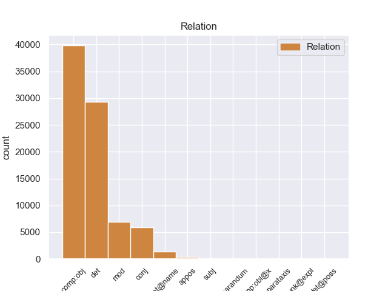
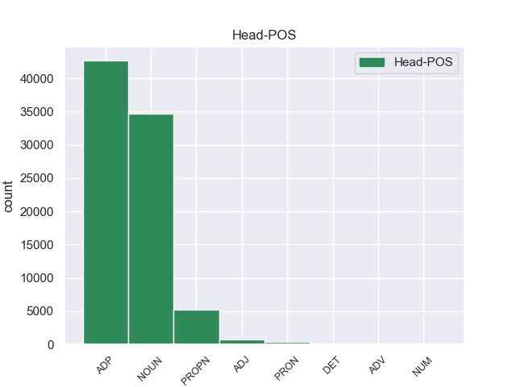
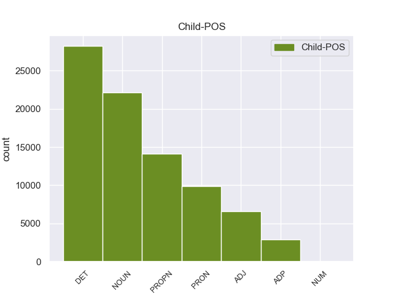

Distribution of features within this leaf



Agreement Rules sorted by frequency.
- When the dependent token is the determiner(det) of the head token, and the head token is NOUN and the dependent token is DET.
1 Vizepräsidentin _ _ _ _ 0 _ _ _
2 Judy _ _ _ _ 0 _ _ _
3 Qua _ _ _ _ 0 _ _ _
4 erklärte _ _ _ _ 0 _ _ _
5 , _ _ _ _ 0 _ _ _
6 der _ _ _ _ 0 _ _ _
7 Gewinn _ _ _ _ 0 _ _ _
8 des des DET ART Case=Gen|Gender=Neut|Number=Sing|PronType=Art 9 det _ _
9 Unternehmens Unternehmen NOUN NN Case=Gen|Gender=Neut|Number=Sing|Person=3 0 _ _ _
10 werde _ _ _ _ 0 _ _ _
11 durch _ _ _ _ 0 _ _ _
12 die _ _ _ _ 0 _ _ _
13 Reduzierung _ _ _ _ 0 _ _ _
14 nicht _ _ _ _ 0 _ _ _
15 negativ _ _ _ _ 0 _ _ _
16 beeinflusst _ _ _ _ 0 _ _ _
17 . _ _ _ _ 0 _ _ _
1 Philips _ _ _ _ 0 _ _ _
2 erklärte _ _ _ _ 0 _ _ _
3 , _ _ _ _ 0 _ _ _
4 dass _ _ _ _ 0 _ _ _
5 die _ _ _ _ 0 _ _ _
6 Hälfte _ _ _ _ 0 _ _ _
7 der _ _ _ _ 0 _ _ _
8 CD-RW-Laufwerke _ _ _ _ 0 _ _ _
9 als _ _ _ _ 0 _ _ _
10 Einbaugeräte _ _ _ _ 0 _ _ _
11 in in ADP APPR AdpType=Prep|Case=Dat 0 _ _ _
12 Computern Computer NOUN NN Case=Dat|Gender=Masc|Number=Plur|Person=3 11 comp:obj _ _
13 verkauft _ _ _ _ 0 _ _ _
14 würden _ _ _ _ 0 _ _ _
15 . _ _ _ _ 0 _ _ _
1 Den _ _ _ _ 0 _ _ _
2 Einsatzzweck _ _ _ _ 0 _ _ _
3 von von ADP APPR AdpType=Prep|Case=Dat 0 _ _ _
4 Powerline Powerline PROPN NE Case=Dat|Number=Sing|Person=3 3 comp:obj _ _
5 Communications _ _ _ _ 0 _ _ _
6 sieht _ _ _ _ 0 _ _ _
7 RWE _ _ _ _ 0 _ _ _
8 nicht _ _ _ _ 0 _ _ _
9 nur _ _ _ _ 0 _ _ _
10 im _ _ _ _ 0 _ _ _
11 schnellen _ _ _ _ 0 _ _ _
12 Surfen _ _ _ _ 0 _ _ _
13 im _ _ _ _ 0 _ _ _
14 Internet _ _ _ _ 0 _ _ _
15 , _ _ _ _ 0 _ _ _
16 sondern _ _ _ _ 0 _ _ _
17 auch _ _ _ _ 0 _ _ _
18 in _ _ _ _ 0 _ _ _
19 der _ _ _ _ 0 _ _ _
20 Telefonie _ _ _ _ 0 _ _ _
21 sowie _ _ _ _ 0 _ _ _
22 der _ _ _ _ 0 _ _ _
23 Vernetzung _ _ _ _ 0 _ _ _
24 von _ _ _ _ 0 _ _ _
25 Haushaltsgeräten _ _ _ _ 0 _ _ _
26 . _ _ _ _ 0 _ _ _
1 Hierzulande _ _ _ _ 0 _ _ _
2 hat _ _ _ _ 0 _ _ _
3 man _ _ _ _ 0 _ _ _
4 vor vor ADP APPR AdpType=Prep|Case=Dat 0 _ _ _
5 ihm ihm PRON PPER Case=Dat|Gender=Neut|Number=Sing|Person=3|PronType=Prs 4 comp:obj _ _
6 allerdings _ _ _ _ 0 _ _ _
7 wenig _ _ _ _ 0 _ _ _
8 zu _ _ _ _ 0 _ _ _
9 befürchten _ _ _ _ 0 _ _ _
10 : _ _ _ _ 0 _ _ _
1 Rechnungen _ _ _ _ 0 _ _ _
2 , _ _ _ _ 0 _ _ _
3 Kontoauszüge _ _ _ _ 0 _ _ _
4 und _ _ _ _ 0 _ _ _
5 andere _ _ _ _ 0 _ _ _
6 Dokumente _ _ _ _ 0 _ _ _
7 , _ _ _ _ 0 _ _ _
8 die _ _ _ _ 0 _ _ _
9 bisher _ _ _ _ 0 _ _ _
10 aus _ _ _ _ 0 _ _ _
11 rechtlichen rechtlich ADJ ADJA Case=Dat|Degree=Pos|Number=Plur 12 mod _ _
12 Gründen Grund NOUN NN Case=Dat|Gender=Masc|Number=Plur|Person=3 0 _ _ _
13 per _ _ _ _ 0 _ _ _
14 Post _ _ _ _ 0 _ _ _
15 verschickt _ _ _ _ 0 _ _ _
16 werden _ _ _ _ 0 _ _ _
17 mussten _ _ _ _ 0 _ _ _
18 , _ _ _ _ 0 _ _ _
19 können _ _ _ _ 0 _ _ _
20 in _ _ _ _ 0 _ _ _
21 Zukunft _ _ _ _ 0 _ _ _
22 digital _ _ _ _ 0 _ _ _
23 in _ _ _ _ 0 _ _ _
24 das _ _ _ _ 0 _ _ _
25 Archiv _ _ _ _ 0 _ _ _
26 gelegt _ _ _ _ 0 _ _ _
27 werden _ _ _ _ 0 _ _ _
28 . _ _ _ _ 0 _ _ _
1 Den _ _ _ _ 0 _ _ _
2 Einsatzzweck _ _ _ _ 0 _ _ _
3 von _ _ _ _ 0 _ _ _
4 Powerline _ _ _ _ 0 _ _ _
5 Communications _ _ _ _ 0 _ _ _
6 sieht _ _ _ _ 0 _ _ _
7 RWE _ _ _ _ 0 _ _ _
8 nicht _ _ _ _ 0 _ _ _
9 nur _ _ _ _ 0 _ _ _
10 im im ADP APPRART AdpType=Prep|Case=Dat|PronType=Art 0 _ _ _
11 schnellen _ _ _ _ 0 _ _ _
12 Surfen _ _ _ _ 0 _ _ _
13 im _ _ _ _ 0 _ _ _
14 Internet _ _ _ _ 0 _ _ _
15 , _ _ _ _ 0 _ _ _
16 sondern _ _ _ _ 0 _ _ _
17 auch _ _ _ _ 0 _ _ _
18 in in ADP APPR AdpType=Prep|Case=Dat 10 conj _ _
19 der _ _ _ _ 0 _ _ _
20 Telefonie _ _ _ _ 0 _ _ _
21 sowie _ _ _ _ 0 _ _ _
22 der _ _ _ _ 0 _ _ _
23 Vernetzung _ _ _ _ 0 _ _ _
24 von _ _ _ _ 0 _ _ _
25 Haushaltsgeräten _ _ _ _ 0 _ _ _
26 . _ _ _ _ 0 _ _ _
1 Besonders _ _ _ _ 0 _ _ _
2 der der DET ART Case=Nom|Gender=Masc|Number=Sing|PronType=Art 3 det _ _
3 Cube Cube PROPN NE Case=Nom|Number=Sing|Person=3 0 _ _ _
4 profitiert _ _ _ _ 0 _ _ _
5 von _ _ _ _ 0 _ _ _
6 der _ _ _ _ 0 _ _ _
7 neuen _ _ _ _ 0 _ _ _
8 Build-To-Order-Option _ _ _ _ 0 _ _ _
9 , _ _ _ _ 0 _ _ _
10 da _ _ _ _ 0 _ _ _
11 sich _ _ _ _ 0 _ _ _
12 die _ _ _ _ 0 _ _ _
13 dort _ _ _ _ 0 _ _ _
14 verbaute _ _ _ _ 0 _ _ _
15 Grafikkarte _ _ _ _ 0 _ _ _
16 nicht _ _ _ _ 0 _ _ _
17 wie _ _ _ _ 0 _ _ _
18 in _ _ _ _ 0 _ _ _
19 den _ _ _ _ 0 _ _ _
20 Power _ _ _ _ 0 _ _ _
21 Macs _ _ _ _ 0 _ _ _
22 vom _ _ _ _ 0 _ _ _
23 Anwender _ _ _ _ 0 _ _ _
24 durch _ _ _ _ 0 _ _ _
25 ein _ _ _ _ 0 _ _ _
26 anderes _ _ _ _ 0 _ _ _
27 Modell _ _ _ _ 0 _ _ _
28 ersetzen _ _ _ _ 0 _ _ _
29 lässt _ _ _ _ 0 _ _ _
30 . _ _ _ _ 0 _ _ _
1 Mit _ _ _ _ 0 _ _ _
2 18.000 _ _ _ _ 0 _ _ _
3 verkauften _ _ _ _ 0 _ _ _
4 Servern _ _ _ _ 0 _ _ _
5 , _ _ _ _ 0 _ _ _
6 die _ _ _ _ 0 _ _ _
7 unter _ _ _ _ 0 _ _ _
8 Linux _ _ _ _ 0 _ _ _
9 laufen _ _ _ _ 0 _ _ _
10 , _ _ _ _ 0 _ _ _
11 liegt _ _ _ _ 0 _ _ _
12 der _ _ _ _ 0 _ _ _
13 Computerhersteller _ _ _ _ 0 _ _ _
14 im _ _ _ _ 0 _ _ _
15 vierten _ _ _ _ 0 _ _ _
16 Quartal _ _ _ _ 0 _ _ _
17 1999 _ _ _ _ 0 _ _ _
18 deutlich _ _ _ _ 0 _ _ _
19 vor _ _ _ _ 0 _ _ _
20 IBM _ _ _ _ 0 _ _ _
21 ( _ _ _ _ 0 _ _ _
22 7.000 _ _ _ _ 0 _ _ _
23 Server _ _ _ _ 0 _ _ _
24 ) _ _ _ _ 0 _ _ _
25 , _ _ _ _ 0 _ _ _
26 Hewlett-Packard Hewlett-Packard PROPN NE Case=Dat|Number=Sing|Person=3 0 _ _ _
27 ( _ _ _ _ 0 _ _ _
28 5.400 _ _ _ _ 0 _ _ _
29 Server _ _ _ _ 0 _ _ _
30 ) _ _ _ _ 0 _ _ _
31 und _ _ _ _ 0 _ _ _
32 Dell Dell PROPN NE Case=Dat|Number=Sing|Person=3 26 conj _ _
33 ( _ _ _ _ 0 _ _ _
34 5.200 _ _ _ _ 0 _ _ _
35 Server _ _ _ _ 0 _ _ _
36 ) _ _ _ _ 0 _ _ _
37 . _ _ _ _ 0 _ _ _
1 GameVoice _ _ _ _ 0 _ _ _
2 , _ _ _ _ 0 _ _ _
3 ein _ _ _ _ 0 _ _ _
4 Teil _ _ _ _ 0 _ _ _
5 der _ _ _ _ 0 _ _ _
6 neu _ _ _ _ 0 _ _ _
7 vorgestellten _ _ _ _ 0 _ _ _
8 Peripherie _ _ _ _ 0 _ _ _
9 , _ _ _ _ 0 _ _ _
10 soll _ _ _ _ 0 _ _ _
11 es _ _ _ _ 0 _ _ _
12 Spielern _ _ _ _ 0 _ _ _
13 ermöglichen _ _ _ _ 0 _ _ _
14 , _ _ _ _ 0 _ _ _
15 mit _ _ _ _ 0 _ _ _
16 ihren sein PRON PPOSAT Case=Dat|Number=Plur|Person=3|Poss=Yes|PronType=Prs 17 det _ _
17 Mitstreitern Streiter NOUN NN Case=Dat|Gender=Masc|Number=Plur|Person=3 0 _ _ _
18 auf _ _ _ _ 0 _ _ _
19 der _ _ _ _ 0 _ _ _
20 ganzen _ _ _ _ 0 _ _ _
21 Welt _ _ _ _ 0 _ _ _
22 per _ _ _ _ 0 _ _ _
23 Sprache _ _ _ _ 0 _ _ _
24 zu _ _ _ _ 0 _ _ _
25 kommunizieren _ _ _ _ 0 _ _ _
26 . _ _ _ _ 0 _ _ _
1 Zu _ _ _ _ 0 _ _ _
2 den _ _ _ _ 0 _ _ _
3 Neuerungen _ _ _ _ 0 _ _ _
4 sollen _ _ _ _ 0 _ _ _
5 die _ _ _ _ 0 _ _ _
6 Unterstützung _ _ _ _ 0 _ _ _
7 des _ _ _ _ 0 _ _ _
8 Bildformates Format NOUN NN Case=Gen|Gender=Neut|Number=Sing|Person=3 0 _ _ _
9 16:9 _ _ _ _ 0 _ _ _
10 und _ _ _ _ 0 _ _ _
11 des _ _ _ _ 0 _ _ _
12 YUV-Komponentensignals Signal NOUN NN Case=Gen|Gender=Neut|Number=Sing|Person=3 8 conj _ _
13 zählen _ _ _ _ 0 _ _ _
14 . _ _ _ _ 0 _ _ _
1 Der _ _ _ _ 0 _ _ _
2 Chip _ _ _ _ 0 _ _ _
3 wird _ _ _ _ 0 _ _ _
4 sich _ _ _ _ 0 _ _ _
5 nach _ _ _ _ 0 _ _ _
6 Aussagen _ _ _ _ 0 _ _ _
7 der _ _ _ _ 0 _ _ _
8 beiden _ _ _ _ 0 _ _ _
9 Partner _ _ _ _ 0 _ _ _
10 in _ _ _ _ 0 _ _ _
11 die _ _ _ _ 0 _ _ _
12 von _ _ _ _ 0 _ _ _
13 der _ _ _ _ 0 _ _ _
14 Firma _ _ _ _ 0 _ _ _
15 C-Cube _ _ _ _ 0 _ _ _
16 - _ _ _ _ 0 _ _ _
17 vor vor ADP APPR AdpType=Prep|Case=Dat 0 _ _ _
18 kurzem kurz ADJ ADJA Case=Dat|Degree=Pos|Number=Sing 17 comp:obj _ _
19 von _ _ _ _ 0 _ _ _
20 LSI _ _ _ _ 0 _ _ _
21 aufgekauft _ _ _ _ 0 _ _ _
22 - _ _ _ _ 0 _ _ _
23 entwickelte _ _ _ _ 0 _ _ _
24 ZiVA-5-Reihe _ _ _ _ 0 _ _ _
25 eingliedern _ _ _ _ 0 _ _ _
26 , _ _ _ _ 0 _ _ _
27 eine _ _ _ _ 0 _ _ _
28 bei _ _ _ _ 0 _ _ _
29 Herstellern _ _ _ _ 0 _ _ _
30 immer _ _ _ _ 0 _ _ _
31 beliebter _ _ _ _ 0 _ _ _
32 werdende _ _ _ _ 0 _ _ _
33 Single-Chip-Lösung _ _ _ _ 0 _ _ _
34 zur _ _ _ _ 0 _ _ _
35 Verarbeitung _ _ _ _ 0 _ _ _
36 von _ _ _ _ 0 _ _ _
37 Audio- _ _ _ _ 0 _ _ _
38 und _ _ _ _ 0 _ _ _
39 Video-Daten _ _ _ _ 0 _ _ _
40 . _ _ _ _ 0 _ _ _
1 Fujitsu Fujitsu PROPN NE Case=Nom|Number=Sing|Person=3 0 _ _ _
2 Siemens Siemens PROPN NE Case=Nom|Number=Sing|Person=3 1 flat@name _ _
3 - _ _ _ _ 0 _ _ _
4 nach _ _ _ _ 0 _ _ _
5 Compaq _ _ _ _ 0 _ _ _
6 die _ _ _ _ 0 _ _ _
7 Nummer _ _ _ _ 0 _ _ _
8 Zwei _ _ _ _ 0 _ _ _
9 - _ _ _ _ 0 _ _ _
10 verlor _ _ _ _ 0 _ _ _
11 1,2 _ _ _ _ 0 _ _ _
12 , _ _ _ _ 0 _ _ _
13 IBM _ _ _ _ 0 _ _ _
14 sogar _ _ _ _ 0 _ _ _
15 2,2 _ _ _ _ 0 _ _ _
16 Prozentpunkte _ _ _ _ 0 _ _ _
17 . _ _ _ _ 0 _ _ _
1 Auf _ _ _ _ 0 _ _ _
2 der _ _ _ _ 0 _ _ _
3 Web-Site _ _ _ _ 0 _ _ _
4 des _ _ _ _ 0 _ _ _
5 noch _ _ _ _ 0 _ _ _
6 nicht _ _ _ _ 0 _ _ _
7 benannten _ _ _ _ 0 _ _ _
8 Unternehmens _ _ _ _ 0 _ _ _
9 soll _ _ _ _ 0 _ _ _
10 der _ _ _ _ 0 _ _ _
11 Surfer _ _ _ _ 0 _ _ _
12 Angebote _ _ _ _ 0 _ _ _
13 vergleichen _ _ _ _ 0 _ _ _
14 und _ _ _ _ 0 _ _ _
15 so _ _ _ _ 0 _ _ _
16 den _ _ _ _ 0 _ _ _
17 schnellsten schnell ADJ ADJA Case=Acc|Degree=Sup|Gender=Masc|Number=Sing 0 _ _ _
18 oder _ _ _ _ 0 _ _ _
19 günstigsten günstig ADJ ADJA Case=Acc|Degree=Sup|Gender=Masc|Number=Sing 17 conj _ _
20 Flug _ _ _ _ 0 _ _ _
21 auswählen _ _ _ _ 0 _ _ _
22 können _ _ _ _ 0 _ _ _
23 . _ _ _ _ 0 _ _ _
1 Der _ _ _ _ 0 _ _ _
2 erste _ _ _ _ 0 _ _ _
3 mit _ _ _ _ 0 _ _ _
4 650 _ _ _ _ 0 _ _ _
5 Nanometer _ _ _ _ 0 _ _ _
6 Wellenlänge _ _ _ _ 0 _ _ _
7 tastet _ _ _ _ 0 _ _ _
8 den _ _ _ _ 0 _ _ _
9 0,74 _ _ _ _ 0 _ _ _
10 Micrometer _ _ _ _ 0 _ _ _
11 Spurabstand _ _ _ _ 0 _ _ _
12 der _ _ _ _ 0 _ _ _
13 DVD-Oberfläche _ _ _ _ 0 _ _ _
14 ab _ _ _ _ 0 _ _ _
15 , _ _ _ _ 0 _ _ _
16 der der DET ART Case=Nom|Gender=Masc|Number=Sing|PronType=Art 17 det _ _
17 zweite zweit ADJ ADJA Case=Nom|Degree=Pos|Gender=Masc|Number=Sing 0 _ _ _
18 mit _ _ _ _ 0 _ _ _
19 780 _ _ _ _ 0 _ _ _
20 Nanometer _ _ _ _ 0 _ _ _
21 Wellenlänge _ _ _ _ 0 _ _ _
22 liest _ _ _ _ 0 _ _ _
23 die _ _ _ _ 0 _ _ _
24 CD-Formate _ _ _ _ 0 _ _ _
25 . _ _ _ _ 0 _ _ _
1 Der _ _ _ _ 0 _ _ _
2 koreanische _ _ _ _ 0 _ _ _
3 Elektronikhersteller _ _ _ _ 0 _ _ _
4 Samsung _ _ _ _ 0 _ _ _
5 und _ _ _ _ 0 _ _ _
6 der _ _ _ _ 0 _ _ _
7 Software-Riese Riese NOUN NN Case=Nom|Gender=Masc|Number=Sing|Person=3 0 _ _ _
8 Microsoft Microsoft PROPN NE Case=Nom|Number=Sing|Person=3 7 flat@name _ _
9 entwickeln _ _ _ _ 0 _ _ _
10 gemeinsam _ _ _ _ 0 _ _ _
11 die _ _ _ _ 0 _ _ _
12 nächste _ _ _ _ 0 _ _ _
13 Generation _ _ _ _ 0 _ _ _
14 von _ _ _ _ 0 _ _ _
15 Mobiltelefonen _ _ _ _ 0 _ _ _
16 . _ _ _ _ 0 _ _ _
1 Kleine _ _ _ _ 0 _ _ _
2 und _ _ _ _ 0 _ _ _
3 mittelständische _ _ _ _ 0 _ _ _
4 Unternehmen _ _ _ _ 0 _ _ _
5 verstärkten _ _ _ _ 0 _ _ _
6 ihre _ _ _ _ 0 _ _ _
7 Bemühungen _ _ _ _ 0 _ _ _
8 , _ _ _ _ 0 _ _ _
9 mit _ _ _ _ 0 _ _ _
10 eigenen _ _ _ _ 0 _ _ _
11 Webseiten _ _ _ _ 0 _ _ _
12 im _ _ _ _ 0 _ _ _
13 Internet _ _ _ _ 0 _ _ _
14 präsent _ _ _ _ 0 _ _ _
15 zu _ _ _ _ 0 _ _ _
16 sein _ _ _ _ 0 _ _ _
17 , _ _ _ _ 0 _ _ _
18 um _ _ _ _ 0 _ _ _
19 so _ _ _ _ 0 _ _ _
20 vor _ _ _ _ 0 _ _ _
21 allen _ _ _ _ 0 _ _ _
22 eine _ _ _ _ 0 _ _ _
23 Verbesserung _ _ _ _ 0 _ _ _
24 des _ _ _ _ 0 _ _ _
25 Kundenservices _ _ _ _ 0 _ _ _
26 und _ _ _ _ 0 _ _ _
27 des _ _ _ _ 0 _ _ _
28 Images Image NOUN NN Case=Gen|Gender=Neut|Number=Sing|Person=3 0 _ _ _
29 ihres _ _ _ _ 0 _ _ _
30 Betriebes Betrieb NOUN NN Case=Gen|Gender=Masc|Number=Sing|Person=3 28 mod _ _
31 zu _ _ _ _ 0 _ _ _
32 erreichen _ _ _ _ 0 _ _ _
33 , _ _ _ _ 0 _ _ _
34 so _ _ _ _ 0 _ _ _
35 eines _ _ _ _ 0 _ _ _
36 der _ _ _ _ 0 _ _ _
37 Ergebnisse _ _ _ _ 0 _ _ _
38 einer _ _ _ _ 0 _ _ _
39 Studie _ _ _ _ 0 _ _ _
40 von _ _ _ _ 0 _ _ _
41 Dr. _ _ _ _ 0 _ _ _
42 Andreas _ _ _ _ 0 _ _ _
43 Kaapke _ _ _ _ 0 _ _ _
44 vom _ _ _ _ 0 _ _ _
45 Institut _ _ _ _ 0 _ _ _
46 für _ _ _ _ 0 _ _ _
47 Handelsforschung _ _ _ _ 0 _ _ _
48 der _ _ _ _ 0 _ _ _
49 Universität _ _ _ _ 0 _ _ _
50 Köln _ _ _ _ 0 _ _ _
51 . _ _ _ _ 0 _ _ _
1 Die Die DET ART Case=Acc|Number=Plur|PronType=Art 3 det _ _
2 größeren _ _ _ _ 0 _ _ _
3 beiden beide PRON PIS Case=Acc|Number=Plur|Person=3|PronType=Ind,Neg,Tot 0 _ _ _
4 mit _ _ _ _ 0 _ _ _
5 256 _ _ _ _ 0 _ _ _
6 MByte _ _ _ _ 0 _ _ _
7 RAM _ _ _ _ 0 _ _ _
8 und _ _ _ _ 0 _ _ _
9 60-GByte-Platte _ _ _ _ 0 _ _ _
10 wird _ _ _ _ 0 _ _ _
11 es _ _ _ _ 0 _ _ _
12 laut _ _ _ _ 0 _ _ _
13 Jobs _ _ _ _ 0 _ _ _
14 im _ _ _ _ 0 _ _ _
15 Februar _ _ _ _ 0 _ _ _
16 für _ _ _ _ 0 _ _ _
17 7499 _ _ _ _ 0 _ _ _
18 beziehungsweise _ _ _ _ 0 _ _ _
19 9299 _ _ _ _ 0 _ _ _
20 Mark _ _ _ _ 0 _ _ _
21 zu _ _ _ _ 0 _ _ _
22 kaufen _ _ _ _ 0 _ _ _
23 geben _ _ _ _ 0 _ _ _
24 . _ _ _ _ 0 _ _ _
1 Der _ _ _ _ 0 _ _ _
2 in _ _ _ _ 0 _ _ _
3 einem _ _ _ _ 0 _ _ _
4 PC-Tower-Gehäuse _ _ _ _ 0 _ _ _
5 untergebrachte _ _ _ _ 0 _ _ _
6 Rechner _ _ _ _ 0 _ _ _
7 kombiniert _ _ _ _ 0 _ _ _
8 einen _ _ _ _ 0 _ _ _
9 kompletten komplett ADJ ADJA Case=Acc|Degree=Pos|Gender=Masc|Number=Sing 10 mod _ _
10 Amiga Amiga PROPN NE Case=Acc|Number=Sing|Person=3 0 _ _ _
11 1200 _ _ _ _ 0 _ _ _
12 mit _ _ _ _ 0 _ _ _
13 einem _ _ _ _ 0 _ _ _
14 PC _ _ _ _ 0 _ _ _
15 der _ _ _ _ 0 _ _ _
16 Pentium-Klasse _ _ _ _ 0 _ _ _
17 . _ _ _ _ 0 _ _ _
1 Die _ _ _ _ 0 _ _ _
2 Kombinationen _ _ _ _ 0 _ _ _
3 aus aus ADP APPR AdpType=Prep|Case=Dat 0 _ _ _
4 Pocket _ _ _ _ 0 _ _ _
5 PC _ _ _ _ 0 _ _ _
6 und _ _ _ _ 0 _ _ _
7 Zusatgeräten Gerät NOUN NN Case=Dat|Gender=Neut|Number=Plur|Person=3 3 conj _ _
8 wiegen _ _ _ _ 0 _ _ _
9 allerdings _ _ _ _ 0 _ _ _
10 teilweise _ _ _ _ 0 _ _ _
11 deutlich _ _ _ _ 0 _ _ _
12 über _ _ _ _ 0 _ _ _
13 300 _ _ _ _ 0 _ _ _
14 Gramm _ _ _ _ 0 _ _ _
15 und _ _ _ _ 0 _ _ _
16 sind _ _ _ _ 0 _ _ _
17 damit _ _ _ _ 0 _ _ _
18 nur _ _ _ _ 0 _ _ _
19 noch _ _ _ _ 0 _ _ _
20 bedingt _ _ _ _ 0 _ _ _
21 Westentaschen-tauglich _ _ _ _ 0 _ _ _
22 . _ _ _ _ 0 _ _ _
1 Obwohl _ _ _ _ 0 _ _ _
2 andere _ _ _ _ 0 _ _ _
3 Browser _ _ _ _ 0 _ _ _
4 das _ _ _ _ 0 _ _ _
5 Plug-in _ _ _ _ 0 _ _ _
6 auch _ _ _ _ 0 _ _ _
7 bei _ _ _ _ 0 _ _ _
8 " _ _ _ _ 0 _ _ _
9 APPLET _ _ _ _ 0 _ _ _
10 " _ _ _ _ 0 _ _ _
11 aufrufen _ _ _ _ 0 _ _ _
12 , _ _ _ _ 0 _ _ _
13 müsste _ _ _ _ 0 _ _ _
14 jede _ _ _ _ 0 _ _ _
15 Webseite _ _ _ _ 0 _ _ _
16 , _ _ _ _ 0 _ _ _
17 die _ _ _ _ 0 _ _ _
18 Java-Applets _ _ _ _ 0 _ _ _
19 enthält _ _ _ _ 0 _ _ _
20 , _ _ _ _ 0 _ _ _
21 für _ _ _ _ 0 _ _ _
22 die _ _ _ _ 0 _ _ _
23 neue _ _ _ _ 0 _ _ _
24 Syntax _ _ _ _ 0 _ _ _
25 umgeschrieben _ _ _ _ 0 _ _ _
26 werden _ _ _ _ 0 _ _ _
27 und _ _ _ _ 0 _ _ _
28 fortan _ _ _ _ 0 _ _ _
29 in _ _ _ _ 0 _ _ _
30 zwei _ _ _ _ 0 _ _ _
31 Versionen _ _ _ _ 0 _ _ _
32 auf _ _ _ _ 0 _ _ _
33 dem _ _ _ _ 0 _ _ _
34 Server _ _ _ _ 0 _ _ _
35 liegen _ _ _ _ 0 _ _ _
36 , _ _ _ _ 0 _ _ _
37 einer ein PRON PIS Case=Dat|Gender=Fem|Number=Sing|Person=3|PronType=Ind,Neg,Tot 0 _ _ _
38 mit _ _ _ _ 0 _ _ _
39 " _ _ _ _ 0 _ _ _
40 APPLET _ _ _ _ 0 _ _ _
41 " _ _ _ _ 0 _ _ _
42 und _ _ _ _ 0 _ _ _
43 einer _ _ _ _ 0 _ _ _
44 anderen ander PRON PIS Case=Dat|Gender=Fem|Number=Sing|Person=3|PronType=Ind,Neg,Tot 37 conj _ _
45 mit _ _ _ _ 0 _ _ _
46 " _ _ _ _ 0 _ _ _
47 OBJECT _ _ _ _ 0 _ _ _
48 " _ _ _ _ 0 _ _ _
49 und _ _ _ _ 0 _ _ _
50 " _ _ _ _ 0 _ _ _
51 EMBED _ _ _ _ 0 _ _ _
52 " _ _ _ _ 0 _ _ _
53 . _ _ _ _ 0 _ _ _
1 Intel _ _ _ _ 0 _ _ _
2 sieht _ _ _ _ 0 _ _ _
3 das das PRON PDS Case=Acc|Gender=Neut|Number=Sing|Person=3|PronType=Dem 0 _ _ _
4 alles all PRON PIS Case=Acc|Gender=Neut|Number=Sing|Person=3|PronType=Ind,Neg,Tot 3 appos _ _
5 gelassener _ _ _ _ 0 _ _ _
6 . _ _ _ _ 0 _ _ _
1 Zu _ _ _ _ 0 _ _ _
2 den _ _ _ _ 0 _ _ _
3 TÜViT-Siegel-Kunden _ _ _ _ 0 _ _ _
4 gehörten _ _ _ _ 0 _ _ _
5 bislang _ _ _ _ 0 _ _ _
6 vor _ _ _ _ 0 _ _ _
7 allem _ _ _ _ 0 _ _ _
8 Banken _ _ _ _ 0 _ _ _
9 aus _ _ _ _ 0 _ _ _
10 arabischen _ _ _ _ 0 _ _ _
11 Ländern _ _ _ _ 0 _ _ _
12 , _ _ _ _ 0 _ _ _
13 erklärte _ _ _ _ 0 _ _ _
14 der _ _ _ _ 0 _ _ _
15 Trusted-Site-Verantwortliche Verantwortlich NOUN NN Case=Nom|Degree=Pos|Gender=Masc|Number=Sing|Person=3 0 _ _ _
16 von _ _ _ _ 0 _ _ _
17 TÜViT _ _ _ _ 0 _ _ _
18 , _ _ _ _ 0 _ _ _
19 Hans Hans PROPN NE Case=Nom|Gender=Masc|Number=Sing|Person=3 15 appos _ _
20 Günter _ _ _ _ 0 _ _ _
21 Siebert _ _ _ _ 0 _ _ _
22 , _ _ _ _ 0 _ _ _
23 gegenüber _ _ _ _ 0 _ _ _
24 c't _ _ _ _ 0 _ _ _
25 . _ _ _ _ 0 _ _ _
1 IBM _ _ _ _ 0 _ _ _
2 , _ _ _ _ 0 _ _ _
3 Hewlett-Packard Hewlett-Packard PROPN NE Case=Nom|Number=Sing|Person=3 0 _ _ _
4 , _ _ _ _ 0 _ _ _
5 Siemens Siemens PROPN NE Case=Nom|Number=Sing|Person=3 3 appos _ _
6 , _ _ _ _ 0 _ _ _
7 Intel _ _ _ _ 0 _ _ _
8 und _ _ _ _ 0 _ _ _
9 die _ _ _ _ 0 _ _ _
10 Telekom _ _ _ _ 0 _ _ _
11 stellten _ _ _ _ 0 _ _ _
12 Computer _ _ _ _ 0 _ _ _
13 für _ _ _ _ 0 _ _ _
14 Schüler _ _ _ _ 0 _ _ _
15 zum _ _ _ _ 0 _ _ _
16 Preis _ _ _ _ 0 _ _ _
17 von _ _ _ _ 0 _ _ _
18 unter _ _ _ _ 0 _ _ _
19 1000 _ _ _ _ 0 _ _ _
20 Mark _ _ _ _ 0 _ _ _
21 in _ _ _ _ 0 _ _ _
22 Aussicht _ _ _ _ 0 _ _ _
23 . _ _ _ _ 0 _ _ _
1 Ein _ _ _ _ 0 _ _ _
2 Microsoft-Passport _ _ _ _ 0 _ _ _
3 soll _ _ _ _ 0 _ _ _
4 dazu _ _ _ _ 0 _ _ _
5 dienen _ _ _ _ 0 _ _ _
6 , _ _ _ _ 0 _ _ _
7 sich _ _ _ _ 0 _ _ _
8 gegenüber _ _ _ _ 0 _ _ _
9 Microsoft Microsoft PROPN NE Case=Dat|Number=Sing|Person=3 0 _ _ _
10 selbst _ _ _ _ 0 _ _ _
11 sowie _ _ _ _ 0 _ _ _
12 Website-Betreibern Betreiber NOUN NN Case=Dat|Gender=Masc|Number=Plur|Person=3 9 conj _ _
13 , _ _ _ _ 0 _ _ _
14 die _ _ _ _ 0 _ _ _
15 Passport _ _ _ _ 0 _ _ _
16 lizenziert _ _ _ _ 0 _ _ _
17 haben _ _ _ _ 0 _ _ _
18 , _ _ _ _ 0 _ _ _
19 auszuweisen _ _ _ _ 0 _ _ _
20 und _ _ _ _ 0 _ _ _
21 beinhaltet _ _ _ _ 0 _ _ _
22 sogar _ _ _ _ 0 _ _ _
23 Passwörter _ _ _ _ 0 _ _ _
24 und _ _ _ _ 0 _ _ _
25 Kreditkarten-Daten _ _ _ _ 0 _ _ _
26 für _ _ _ _ 0 _ _ _
27 die _ _ _ _ 0 _ _ _
28 Bezahlung _ _ _ _ 0 _ _ _
29 im _ _ _ _ 0 _ _ _
30 Netz _ _ _ _ 0 _ _ _
31 . _ _ _ _ 0 _ _ _
1 Zwar _ _ _ _ 0 _ _ _
2 passten _ _ _ _ 0 _ _ _
3 Musik _ _ _ _ 0 _ _ _
4 und _ _ _ _ 0 _ _ _
5 Internet _ _ _ _ 0 _ _ _
6 " _ _ _ _ 0 _ _ _
7 ideal _ _ _ _ 0 _ _ _
8 zusammen _ _ _ _ 0 _ _ _
9 " _ _ _ _ 0 _ _ _
10 , _ _ _ _ 0 _ _ _
11 wie _ _ _ _ 0 _ _ _
12 Thomas Thomas PROPN NE Case=Nom|Number=Sing|Person=3 0 _ _ _
13 M. _ _ _ _ 0 _ _ _
14 Stein _ _ _ _ 0 _ _ _
15 , _ _ _ _ 0 _ _ _
16 Vorsitzender Vorsitzend NOUN NN Case=Nom|Degree=Pos|Gender=Masc|Number=Sing|Person=3 12 appos _ _
17 des _ _ _ _ 0 _ _ _
18 Bundesverbandes _ _ _ _ 0 _ _ _
19 der _ _ _ _ 0 _ _ _
20 Phonographischen _ _ _ _ 0 _ _ _
21 Wirtschaft _ _ _ _ 0 _ _ _
22 ( _ _ _ _ 0 _ _ _
23 IFPI _ _ _ _ 0 _ _ _
24 ) _ _ _ _ 0 _ _ _
25 , _ _ _ _ 0 _ _ _
26 am _ _ _ _ 0 _ _ _
27 Donnerstag _ _ _ _ 0 _ _ _
28 in _ _ _ _ 0 _ _ _
29 Hamburg _ _ _ _ 0 _ _ _
30 zugab _ _ _ _ 0 _ _ _
31 . _ _ _ _ 0 _ _ _
1 3Com 3Com PROPN NE Case=Nom|Number=Sing|Person=3 0 _ _ _
2 , _ _ _ _ 0 _ _ _
3 einer ein PRON PIS Case=Nom|Gender=Masc|Number=Sing|Person=3|PronType=Ind,Neg,Tot 1 appos _ _
4 der _ _ _ _ 0 _ _ _
5 größten _ _ _ _ 0 _ _ _
6 US-amerikanischen _ _ _ _ 0 _ _ _
7 Hersteller _ _ _ _ 0 _ _ _
8 von _ _ _ _ 0 _ _ _
9 Netzwerk-Equipment _ _ _ _ 0 _ _ _
10 , _ _ _ _ 0 _ _ _
11 hat _ _ _ _ 0 _ _ _
12 in _ _ _ _ 0 _ _ _
13 seinem _ _ _ _ 0 _ _ _
14 vierten _ _ _ _ 0 _ _ _
15 Quartal _ _ _ _ 0 _ _ _
16 , _ _ _ _ 0 _ _ _
17 das _ _ _ _ 0 _ _ _
18 am _ _ _ _ 0 _ _ _
19 2. _ _ _ _ 0 _ _ _
20 Juni _ _ _ _ 0 _ _ _
21 endete _ _ _ _ 0 _ _ _
22 , _ _ _ _ 0 _ _ _
23 einen _ _ _ _ 0 _ _ _
24 Umsatzrückgang _ _ _ _ 0 _ _ _
25 um _ _ _ _ 0 _ _ _
26 rund _ _ _ _ 0 _ _ _
27 38 _ _ _ _ 0 _ _ _
28 Prozent _ _ _ _ 0 _ _ _
29 auf _ _ _ _ 0 _ _ _
30 763,7 _ _ _ _ 0 _ _ _
31 Millionen _ _ _ _ 0 _ _ _
32 US-Dollar _ _ _ _ 0 _ _ _
33 verzeichnet _ _ _ _ 0 _ _ _
34 . _ _ _ _ 0 _ _ _
1 Sun _ _ _ _ 0 _ _ _
2 Microsystems _ _ _ _ 0 _ _ _
3 hat _ _ _ _ 0 _ _ _
4 auf _ _ _ _ 0 _ _ _
5 der _ _ _ _ 0 _ _ _
6 Konferenz _ _ _ _ 0 _ _ _
7 der _ _ _ _ 0 _ _ _
8 National _ _ _ _ 0 _ _ _
9 Association _ _ _ _ 0 _ _ _
10 of _ _ _ _ 0 _ _ _
11 Broadcasters _ _ _ _ 0 _ _ _
12 seinen sein PRON PPOSAT Case=Acc|Gender=Masc|Number=Sing|Person=3|Poss=Yes|PronType=Prs 13 det _ _
13 Sun Sun PROPN NE Case=Acc|Number=Sing|Person=3 0 _ _ _
14 StorEdge _ _ _ _ 0 _ _ _
15 Media _ _ _ _ 0 _ _ _
16 Central _ _ _ _ 0 _ _ _
17 Streaming _ _ _ _ 0 _ _ _
18 Server _ _ _ _ 0 _ _ _
19 angekündigt _ _ _ _ 0 _ _ _
20 . _ _ _ _ 0 _ _ _
1 Es _ _ _ _ 0 _ _ _
2 soll _ _ _ _ 0 _ _ _
3 um um ADP APPR AdpType=Prep|Case=Acc 0 _ _ _
4 die die DET ART Case=Acc|Number=Plur|PronType=Art 3 comp:obj _ _
5 1000 _ _ _ _ 0 _ _ _
6 Mark _ _ _ _ 0 _ _ _
7 kosten _ _ _ _ 0 _ _ _
8 . _ _ _ _ 0 _ _ _
1 Wer _ _ _ _ 0 _ _ _
2 sich _ _ _ _ 0 _ _ _
3 einmal _ _ _ _ 0 _ _ _
4 an _ _ _ _ 0 _ _ _
5 Steigerungsraten _ _ _ _ 0 _ _ _
6 von _ _ _ _ 0 _ _ _
7 mehreren _ _ _ _ 0 _ _ _
8 hundert _ _ _ _ 0 _ _ _
9 oder _ _ _ _ 0 _ _ _
10 gar _ _ _ _ 0 _ _ _
11 Tausenden Tausend NOUN NN Case=Dat|Gender=Neut|Number=Plur|Person=3 0 _ _ _
12 Prozenten Prozent NOUN NN Case=Dat|Gender=Neut|Number=Plur|Person=3 11 appos _ _
13 gewöhnt _ _ _ _ 0 _ _ _
14 hat _ _ _ _ 0 _ _ _
15 , _ _ _ _ 0 _ _ _
16 dem _ _ _ _ 0 _ _ _
17 fällt _ _ _ _ 0 _ _ _
18 es _ _ _ _ 0 _ _ _
19 schwer _ _ _ _ 0 _ _ _
20 , _ _ _ _ 0 _ _ _
21 seine _ _ _ _ 0 _ _ _
22 Erwartungen _ _ _ _ 0 _ _ _
23 auf _ _ _ _ 0 _ _ _
24 ein _ _ _ _ 0 _ _ _
25 normales _ _ _ _ 0 _ _ _
26 Maß _ _ _ _ 0 _ _ _
27 zurückzufahren _ _ _ _ 0 _ _ _
28 . _ _ _ _ 0 _ _ _
1 " _ _ _ _ 0 _ _ _
2 Der _ _ _ _ 0 _ _ _
3 Test _ _ _ _ 0 _ _ _
4 geriet _ _ _ _ 0 _ _ _
5 wohl _ _ _ _ 0 _ _ _
6 ein ein DET ART Case=Acc|Gender=Neut|Number=Sing|PronType=Art 7 det _ _
7 bisschen bisschen ADV ADV Case=Acc|Gender=Neut|Number=Sing 0 _ _ _
8 außer _ _ _ _ 0 _ _ _
9 Kontrolle _ _ _ _ 0 _ _ _
10 " _ _ _ _ 0 _ _ _
11 , _ _ _ _ 0 _ _ _
12 räumte _ _ _ _ 0 _ _ _
13 der _ _ _ _ 0 _ _ _
14 Sprecher _ _ _ _ 0 _ _ _
15 ein _ _ _ _ 0 _ _ _
16 . _ _ _ _ 0 _ _ _
1 Damit _ _ _ _ 0 _ _ _
2 hofft _ _ _ _ 0 _ _ _
3 das _ _ _ _ 0 _ _ _
4 Internet-Portal _ _ _ _ 0 _ _ _
5 in _ _ _ _ 0 _ _ _
6 den _ _ _ _ 0 _ _ _
7 Kernmärkten Markt NOUN NN Case=Dat|Gender=Masc|Number=Plur|Person=3 0 _ _ _
8 Deutschland _ _ _ _ 0 _ _ _
9 , _ _ _ _ 0 _ _ _
10 Frankreich Frankreich PROPN NE Case=Dat|Number=Sing|Person=3 7 conj _ _
11 und _ _ _ _ 0 _ _ _
12 Großbritannien _ _ _ _ 0 _ _ _
13 eine _ _ _ _ 0 _ _ _
14 Position _ _ _ _ 0 _ _ _
15 unter _ _ _ _ 0 _ _ _
16 den _ _ _ _ 0 _ _ _
17 größten _ _ _ _ 0 _ _ _
18 drei _ _ _ _ 0 _ _ _
19 Internet-Anbietern _ _ _ _ 0 _ _ _
20 einnehmen _ _ _ _ 0 _ _ _
21 zu _ _ _ _ 0 _ _ _
22 können _ _ _ _ 0 _ _ _
23 . _ _ _ _ 0 _ _ _
1 " _ _ _ _ 0 _ _ _
2 Dies _ _ _ _ 0 _ _ _
3 ist _ _ _ _ 0 _ _ _
4 der _ _ _ _ 0 _ _ _
5 Anfang _ _ _ _ 0 _ _ _
6 vom _ _ _ _ 0 _ _ _
7 Anfang _ _ _ _ 0 _ _ _
8 für _ _ _ _ 0 _ _ _
9 die _ _ _ _ 0 _ _ _
10 Transformation _ _ _ _ 0 _ _ _
11 des _ _ _ _ 0 _ _ _
12 Fernsehens _ _ _ _ 0 _ _ _
13 " _ _ _ _ 0 _ _ _
14 , _ _ _ _ 0 _ _ _
15 erklärte _ _ _ _ 0 _ _ _
16 Barry _ _ _ _ 0 _ _ _
17 Schuler _ _ _ _ 0 _ _ _
18 , _ _ _ _ 0 _ _ _
19 der _ _ _ _ 0 _ _ _
20 Vorsitzende Vorsitzend NOUN NN Case=Nom|Degree=Pos|Gender=Masc|Number=Sing|Person=3 0 _ _ _
21 der _ _ _ _ 0 _ _ _
22 AOL AOL PROPN NE Case=Nom|Number=Sing|Person=3 20 mod _ _
23 Interactive _ _ _ _ 0 _ _ _
24 Services _ _ _ _ 0 _ _ _
25 Group _ _ _ _ 0 _ _ _
26 . _ _ _ _ 0 _ _ _
1 Damit _ _ _ _ 0 _ _ _
2 kann _ _ _ _ 0 _ _ _
3 der _ _ _ _ 0 _ _ _
4 Benutzer _ _ _ _ 0 _ _ _
5 in _ _ _ _ 0 _ _ _
6 der _ _ _ _ 0 _ _ _
7 Eingabezeile _ _ _ _ 0 _ _ _
8 statt _ _ _ _ 0 _ _ _
9 eines _ _ _ _ 0 _ _ _
10 URLs _ _ _ _ 0 _ _ _
11 einen einen DET ART Case=Acc|Gender=Masc|Number=Sing|PronType=Art 0 _ _ _
12 oder _ _ _ _ 0 _ _ _
13 mehrere mehrer DET PIAT Case=Acc|Number=Plur|Person=3|PronType=Ind,Neg,Tot 11 conj _ _
14 Suchbegriffe _ _ _ _ 0 _ _ _
15 eingeben _ _ _ _ 0 _ _ _
16 und _ _ _ _ 0 _ _ _
17 erhält _ _ _ _ 0 _ _ _
18 das _ _ _ _ 0 _ _ _
19 Ergebnis _ _ _ _ 0 _ _ _
20 einer _ _ _ _ 0 _ _ _
21 Suche _ _ _ _ 0 _ _ _
22 auf _ _ _ _ 0 _ _ _
23 Netscapes _ _ _ _ 0 _ _ _
24 Search _ _ _ _ 0 _ _ _
25 Engine _ _ _ _ 0 _ _ _
26 Excite _ _ _ _ 0 _ _ _
27 . _ _ _ _ 0 _ _ _
1 Der _ _ _ _ 0 _ _ _
2 Starautor _ _ _ _ 0 _ _ _
3 hatte _ _ _ _ 0 _ _ _
4 ja _ _ _ _ 0 _ _ _
5 auch _ _ _ _ 0 _ _ _
6 was was PRON PIS Case=Acc|Gender=Neut|Number=Sing|Person=3|PronType=Ind,Neg,Tot 0 _ _ _
7 ganz _ _ _ _ 0 _ _ _
8 anderes ander PRON PIS Case=Acc|Gender=Neut|Number=Sing|Person=3|PronType=Ind,Neg,Tot 6 mod _ _
9 im _ _ _ _ 0 _ _ _
10 Sinn _ _ _ _ 0 _ _ _
11 , _ _ _ _ 0 _ _ _
12 als _ _ _ _ 0 _ _ _
13 seinen _ _ _ _ 0 _ _ _
14 Lesern _ _ _ _ 0 _ _ _
15 neues _ _ _ _ 0 _ _ _
16 Futter _ _ _ _ 0 _ _ _
17 zu _ _ _ _ 0 _ _ _
18 geben _ _ _ _ 0 _ _ _
19 . _ _ _ _ 0 _ _ _
1 Dies _ _ _ _ 0 _ _ _
2 sei _ _ _ _ 0 _ _ _
3 " _ _ _ _ 0 _ _ _
4 eine _ _ _ _ 0 _ _ _
5 schallende _ _ _ _ 0 _ _ _
6 Ohrfeige _ _ _ _ 0 _ _ _
7 für _ _ _ _ 0 _ _ _
8 den _ _ _ _ 0 _ _ _
9 sich sich PRON PRF Case=Acc|Person=3|PronType=Prs|Reflex=Yes 13 comp:obj _ _
10 ohnehin _ _ _ _ 0 _ _ _
11 nur _ _ _ _ 0 _ _ _
12 zaghaft _ _ _ _ 0 _ _ _
13 entwickelnden entwickeln ADJ ADJA Case=Acc|Degree=Pos|Gender=Masc|Number=Sing 0 _ _ _
14 Telekommunikationswettbewerb _ _ _ _ 0 _ _ _
15 im _ _ _ _ 0 _ _ _
16 Ortsnetz _ _ _ _ 0 _ _ _
17 und _ _ _ _ 0 _ _ _
18 eine _ _ _ _ 0 _ _ _
19 insgesamt _ _ _ _ 0 _ _ _
20 große _ _ _ _ 0 _ _ _
21 Gefahr _ _ _ _ 0 _ _ _
22 für _ _ _ _ 0 _ _ _
23 den _ _ _ _ 0 _ _ _
24 Fortbestand _ _ _ _ 0 _ _ _
25 des _ _ _ _ 0 _ _ _
26 liberalisierten _ _ _ _ 0 _ _ _
27 Marktes _ _ _ _ 0 _ _ _
28 " _ _ _ _ 0 _ _ _
29 , _ _ _ _ 0 _ _ _
30 urteilten _ _ _ _ 0 _ _ _
31 heute _ _ _ _ 0 _ _ _
32 die _ _ _ _ 0 _ _ _
33 Geschäftsführer _ _ _ _ 0 _ _ _
34 der _ _ _ _ 0 _ _ _
35 RegioNet-Mitglieder _ _ _ _ 0 _ _ _
36 in _ _ _ _ 0 _ _ _
37 Berlin _ _ _ _ 0 _ _ _
38 . _ _ _ _ 0 _ _ _
1 An _ _ _ _ 0 _ _ _
2 exotischen _ _ _ _ 0 _ _ _
3 Sprachen _ _ _ _ 0 _ _ _
4 wie _ _ _ _ 0 _ _ _
5 Arabisch _ _ _ _ 0 _ _ _
6 , _ _ _ _ 0 _ _ _
7 Chinesisch _ _ _ _ 0 _ _ _
8 , _ _ _ _ 0 _ _ _
9 Griechisch _ _ _ _ 0 _ _ _
10 , _ _ _ _ 0 _ _ _
11 Russisch _ _ _ _ 0 _ _ _
12 , _ _ _ _ 0 _ _ _
13 Sanskrit _ _ _ _ 0 _ _ _
14 oder _ _ _ _ 0 _ _ _
15 Hebräisch _ _ _ _ 0 _ _ _
16 beißen _ _ _ _ 0 _ _ _
17 sich _ _ _ _ 0 _ _ _
18 " _ _ _ _ 0 _ _ _
19 normale _ _ _ _ 0 _ _ _
20 " _ _ _ _ 0 _ _ _
21 Textverarbeitungen _ _ _ _ 0 _ _ _
22 wie _ _ _ _ 0 _ _ _
23 Word _ _ _ _ 0 _ _ _
24 für für ADP APPR AdpType=Prep|Case=Acc 0 _ _ _
25 Windows _ _ _ _ 0 _ _ _
26 oder _ _ _ _ 0 _ _ _
27 WordPerfect WordPerfect PROPN NE Case=Acc|Number=Sing|Person=3 24 conj _ _
28 die _ _ _ _ 0 _ _ _
29 Zähne _ _ _ _ 0 _ _ _
30 aus _ _ _ _ 0 _ _ _
31 . _ _ _ _ 0 _ _ _
1 Der _ _ _ _ 0 _ _ _
2 linke _ _ _ _ 0 _ _ _
3 Kanal _ _ _ _ 0 _ _ _
4 dringt _ _ _ _ 0 _ _ _
5 deutlich _ _ _ _ 0 _ _ _
6 lauter _ _ _ _ 0 _ _ _
7 ins _ _ _ _ 0 _ _ _
8 Gehör _ _ _ _ 0 _ _ _
9 als _ _ _ _ 0 _ _ _
10 der _ _ _ _ 0 _ _ _
11 zudem _ _ _ _ 0 _ _ _
12 dumpfer _ _ _ _ 0 _ _ _
13 klingende klingen ADJ ADJA Case=Nom|Degree=Pos|Gender=Masc|Number=Sing 14 mod _ _
14 rechte recht ADJ ADJA Case=Nom|Degree=Pos|Gender=Masc|Number=Sing 0 _ _ _
15 . _ _ _ _ 0 _ _ _
1 Laut _ _ _ _ 0 _ _ _
2 Excite@Home _ _ _ _ 0 _ _ _
3 sind _ _ _ _ 0 _ _ _
4 inzwischen _ _ _ _ 0 _ _ _
5 17 _ _ _ _ 0 _ _ _
6 Millionen _ _ _ _ 0 _ _ _
7 amerikanische _ _ _ _ 0 _ _ _
8 Haushalte _ _ _ _ 0 _ _ _
9 mit _ _ _ _ 0 _ _ _
10 einem _ _ _ _ 0 _ _ _
11 Anschluss _ _ _ _ 0 _ _ _
12 des _ _ _ _ 0 _ _ _
13 Unternehmens Unternehmen NOUN NN Case=Gen|Gender=Neut|Number=Sing|Person=3 0 _ _ _
14 oder _ _ _ _ 0 _ _ _
15 eines ein PRON PIS Case=Gen|Gender=Masc|Number=Sing|Person=3|PronType=Ind,Neg,Tot 13 conj _ _
16 seiner _ _ _ _ 0 _ _ _
17 Partner _ _ _ _ 0 _ _ _
18 ausgestattet _ _ _ _ 0 _ _ _
19 , _ _ _ _ 0 _ _ _
20 der _ _ _ _ 0 _ _ _
21 neben _ _ _ _ 0 _ _ _
22 Fernsehempfang _ _ _ _ 0 _ _ _
23 auch _ _ _ _ 0 _ _ _
24 den _ _ _ _ 0 _ _ _
25 Internet-Zugang _ _ _ _ 0 _ _ _
26 ermöglicht _ _ _ _ 0 _ _ _
27 . _ _ _ _ 0 _ _ _
1 Netscape _ _ _ _ 0 _ _ _
2 fehle _ _ _ _ 0 _ _ _
3 einfach _ _ _ _ 0 _ _ _
4 die _ _ _ _ 0 _ _ _
5 Zeit _ _ _ _ 0 _ _ _
6 , _ _ _ _ 0 _ _ _
7 um _ _ _ _ 0 _ _ _
8 neben _ _ _ _ 0 _ _ _
9 dem dem DET ART Case=Dat|Gender=Masc|Number=Sing|PronType=Art 10 reparandum _ _
10 dem dem DET ART Case=Dat|Gender=Masc|Number=Sing|PronType=Art 0 _ _ _
11 Document _ _ _ _ 0 _ _ _
12 Object _ _ _ _ 0 _ _ _
13 Model _ _ _ _ 0 _ _ _
14 ( _ _ _ _ 0 _ _ _
15 DOM _ _ _ _ 0 _ _ _
16 ) _ _ _ _ 0 _ _ _
17 des _ _ _ _ 0 _ _ _
18 W3C _ _ _ _ 0 _ _ _
19 auch _ _ _ _ 0 _ _ _
20 die _ _ _ _ 0 _ _ _
21 proprietären _ _ _ _ 0 _ _ _
22 DOMs _ _ _ _ 0 _ _ _
23 von _ _ _ _ 0 _ _ _
24 Internet _ _ _ _ 0 _ _ _
25 Explorer _ _ _ _ 0 _ _ _
26 4 _ _ _ _ 0 _ _ _
27 und _ _ _ _ 0 _ _ _
28 Navigator _ _ _ _ 0 _ _ _
29 4 _ _ _ _ 0 _ _ _
30 vollständig _ _ _ _ 0 _ _ _
31 zu _ _ _ _ 0 _ _ _
32 unterstützen _ _ _ _ 0 _ _ _
33 . _ _ _ _ 0 _ _ _
1 Schon _ _ _ _ 0 _ _ _
2 zu _ _ _ _ 0 _ _ _
3 Sockel-7-Zeiten _ _ _ _ 0 _ _ _
4 kam _ _ _ _ 0 _ _ _
5 deshalb _ _ _ _ 0 _ _ _
6 so _ _ _ _ 0 _ _ _
7 ein _ _ _ _ 0 _ _ _
8 " _ _ _ _ 0 _ _ _
9 P-Rating _ _ _ _ 0 _ _ _
10 " _ _ _ _ 0 _ _ _
11 für _ _ _ _ 0 _ _ _
12 Prozessoren _ _ _ _ 0 _ _ _
13 wie _ _ _ _ 0 _ _ _
14 den _ _ _ _ 0 _ _ _
15 AMD _ _ _ _ 0 _ _ _
16 K5 _ _ _ _ 0 _ _ _
17 , _ _ _ _ 0 _ _ _
18 Cyrix Cyrix PROPN NE Case=Nom|Number=Sing|Person=3 0 _ _ _
19 M2 _ _ _ _ 0 _ _ _
20 und _ _ _ _ 0 _ _ _
21 andere ander PRON PIS Case=Nom|Gender=Neut|Number=Sing|Person=3|PronType=Ind,Neg,Tot 18 conj _ _
22 in _ _ _ _ 0 _ _ _
23 Mode _ _ _ _ 0 _ _ _
24 . _ _ _ _ 0 _ _ _
1 Die _ _ _ _ 0 _ _ _
2 Bildung _ _ _ _ 0 _ _ _
3 eines ein PRON PIS Case=Gen|Gender=Masc|Number=Sing|Person=3|PronType=Ind,Neg,Tot 0 _ _ _
4 der _ _ _ _ 0 _ _ _
5 zehn _ _ _ _ 0 _ _ _
6 größten _ _ _ _ 0 _ _ _
7 IT-Dienstleister _ _ _ _ 0 _ _ _
8 und _ _ _ _ 0 _ _ _
9 des _ _ _ _ 0 _ _ _
10 fünftgrößten _ _ _ _ 0 _ _ _
11 SAP-Beratungszentrums Zentrum NOUN NN Case=Gen|Gender=Neut|Number=Sing|Person=3 3 conj _ _
12 in _ _ _ _ 0 _ _ _
13 Deutschland _ _ _ _ 0 _ _ _
14 haben _ _ _ _ 0 _ _ _
15 sich _ _ _ _ 0 _ _ _
16 SAP _ _ _ _ 0 _ _ _
17 , _ _ _ _ 0 _ _ _
18 Siemens _ _ _ _ 0 _ _ _
19 und _ _ _ _ 0 _ _ _
20 die _ _ _ _ 0 _ _ _
21 Software _ _ _ _ 0 _ _ _
22 AG _ _ _ _ 0 _ _ _
23 auf _ _ _ _ 0 _ _ _
24 die _ _ _ _ 0 _ _ _
25 Fahnen _ _ _ _ 0 _ _ _
26 geschrieben _ _ _ _ 0 _ _ _
27 . _ _ _ _ 0 _ _ _
1 " _ _ _ _ 0 _ _ _
2 Er Er PRON PPER Case=Nom|Gender=Masc|Number=Sing|Person=3|PronType=Prs 0 _ _ _
3 ( _ _ _ _ 0 _ _ _
4 Gates Gates PROPN NE Case=Nom|Number=Sing|Person=3 2 appos _ _
5 ) _ _ _ _ 0 _ _ _
6 machte _ _ _ _ 0 _ _ _
7 keinen _ _ _ _ 0 _ _ _
8 der _ _ _ _ 0 _ _ _
9 Kommentare _ _ _ _ 0 _ _ _
10 , _ _ _ _ 0 _ _ _
11 was _ _ _ _ 0 _ _ _
12 den _ _ _ _ 0 _ _ _
13 Source-Code _ _ _ _ 0 _ _ _
14 betrifft _ _ _ _ 0 _ _ _
15 , _ _ _ _ 0 _ _ _
16 die _ _ _ _ 0 _ _ _
17 ihm _ _ _ _ 0 _ _ _
18 zugeschrieben _ _ _ _ 0 _ _ _
19 werden _ _ _ _ 0 _ _ _
20 . _ _ _ _ 0 _ _ _
1 Details _ _ _ _ 0 _ _ _
2 der _ _ _ _ 0 _ _ _
3 Abkommen _ _ _ _ 0 _ _ _
4 wollen _ _ _ _ 0 _ _ _
5 die _ _ _ _ 0 _ _ _
6 beteiligten _ _ _ _ 0 _ _ _
7 Gewerkschaften _ _ _ _ 0 _ _ _
8 im im ADP APPRART AdpType=Prep|Case=Dat|PronType=Art 9 reparandum _ _
9 am am ADP APPRART AdpType=Prep|Case=Dat|PronType=Art 0 _ _ _
10 heutigen _ _ _ _ 0 _ _ _
11 Montag _ _ _ _ 0 _ _ _
12 Abend _ _ _ _ 0 _ _ _
13 ( _ _ _ _ 0 _ _ _
14 Ortszeit _ _ _ _ 0 _ _ _
15 ) _ _ _ _ 0 _ _ _
16 auf _ _ _ _ 0 _ _ _
17 ihren _ _ _ _ 0 _ _ _
18 Webseiten _ _ _ _ 0 _ _ _
19 bekannt _ _ _ _ 0 _ _ _
20 geben _ _ _ _ 0 _ _ _
21 . _ _ _ _ 0 _ _ _
1 Der _ _ _ _ 0 _ _ _
2 Schaden _ _ _ _ 0 _ _ _
3 an _ _ _ _ 0 _ _ _
4 den _ _ _ _ 0 _ _ _
5 für für ADP APPR AdpType=Prep|Case=Acc 8 comp:obj _ _
6 die _ _ _ _ 0 _ _ _
7 E-Mails _ _ _ _ 0 _ _ _
8 zuständigen zuständig ADJ ADJA Case=Acc|Degree=Pos|Gender=Masc|Number=Sing 0 _ _ _
9 Server _ _ _ _ 0 _ _ _
10 stellte _ _ _ _ 0 _ _ _
11 sich _ _ _ _ 0 _ _ _
12 in _ _ _ _ 0 _ _ _
13 der _ _ _ _ 0 _ _ _
14 Nacht _ _ _ _ 0 _ _ _
15 zum _ _ _ _ 0 _ _ _
16 Montag _ _ _ _ 0 _ _ _
17 als _ _ _ _ 0 _ _ _
18 schwerwiegender _ _ _ _ 0 _ _ _
19 heraus _ _ _ _ 0 _ _ _
20 als _ _ _ _ 0 _ _ _
21 zunächst _ _ _ _ 0 _ _ _
22 angenommen _ _ _ _ 0 _ _ _
23 - _ _ _ _ 0 _ _ _
24 Strato _ _ _ _ 0 _ _ _
25 orderte _ _ _ _ 0 _ _ _
26 noch _ _ _ _ 0 _ _ _
27 in _ _ _ _ 0 _ _ _
28 der _ _ _ _ 0 _ _ _
29 Nacht _ _ _ _ 0 _ _ _
30 eine _ _ _ _ 0 _ _ _
31 Ersatzmaschine _ _ _ _ 0 _ _ _
32 . _ _ _ _ 0 _ _ _
1 Dazu _ _ _ _ 0 _ _ _
2 zählen _ _ _ _ 0 _ _ _
3 unter _ _ _ _ 0 _ _ _
4 vielen viel ADJ PIDAT Case=Dat|Degree=Pos|Number=Plur|Person=3 5 mod _ _
5 anderen ander PRON PIS Case=Dat|Number=Plur|Person=3|PronType=Ind,Neg,Tot 0 _ _ _
6 die _ _ _ _ 0 _ _ _
7 amerikanische _ _ _ _ 0 _ _ _
8 DaimlerChrysler-Tochter _ _ _ _ 0 _ _ _
9 Chrysler _ _ _ _ 0 _ _ _
10 ( _ _ _ _ 0 _ _ _
11 26.000 _ _ _ _ 0 _ _ _
12 ) _ _ _ _ 0 _ _ _
13 , _ _ _ _ 0 _ _ _
14 der _ _ _ _ 0 _ _ _
15 Chip- _ _ _ _ 0 _ _ _
16 und _ _ _ _ 0 _ _ _
17 Handy-Hersteller _ _ _ _ 0 _ _ _
18 Motorola _ _ _ _ 0 _ _ _
19 ( _ _ _ _ 0 _ _ _
20 22.000 _ _ _ _ 0 _ _ _
21 ) _ _ _ _ 0 _ _ _
22 , _ _ _ _ 0 _ _ _
23 der _ _ _ _ 0 _ _ _
24 Telecom-Ausrüster _ _ _ _ 0 _ _ _
25 Lucent _ _ _ _ 0 _ _ _
26 ( _ _ _ _ 0 _ _ _
27 16.000 _ _ _ _ 0 _ _ _
28 ) _ _ _ _ 0 _ _ _
29 , _ _ _ _ 0 _ _ _
30 die _ _ _ _ 0 _ _ _
31 Telefongesellschaft _ _ _ _ 0 _ _ _
32 Verizon _ _ _ _ 0 _ _ _
33 ( _ _ _ _ 0 _ _ _
34 10.000 _ _ _ _ 0 _ _ _
35 ) _ _ _ _ 0 _ _ _
36 und _ _ _ _ 0 _ _ _
37 der _ _ _ _ 0 _ _ _
38 Verbraucherproduktriese _ _ _ _ 0 _ _ _
39 Procter _ _ _ _ 0 _ _ _
40 & _ _ _ _ 0 _ _ _
41 Gamble _ _ _ _ 0 _ _ _
42 ( _ _ _ _ 0 _ _ _
43 9.600 _ _ _ _ 0 _ _ _
44 ) _ _ _ _ 0 _ _ _
45 . _ _ _ _ 0 _ _ _
1 Dafür _ _ _ _ 0 _ _ _
2 bin _ _ _ _ 0 _ _ _
3 ich _ _ _ _ 0 _ _ _
4 jetzt _ _ _ _ 0 _ _ _
5 aber _ _ _ _ 0 _ _ _
6 gespannt _ _ _ _ 0 _ _ _
7 , _ _ _ _ 0 _ _ _
8 welchen _ _ _ _ 0 _ _ _
9 Vogel _ _ _ _ 0 _ _ _
10 Harald _ _ _ _ 0 _ _ _
11 Schmidt _ _ _ _ 0 _ _ _
12 aus _ _ _ _ 0 _ _ _
13 der _ _ _ _ 0 _ _ _
14 Tasche _ _ _ _ 0 _ _ _
15 zieht _ _ _ _ 0 _ _ _
16 , _ _ _ _ 0 _ _ _
17 um _ _ _ _ 0 _ _ _
18 uns uns PRON PPER Case=Dat|Number=Plur|Person=1|PronType=Prs 0 _ _ _
19 armen _ _ _ _ 0 _ _ _
20 Erdenbürgern Bürger NOUN NN Case=Dat|Gender=Masc|Number=Plur|Person=3 18 appos _ _
21 Times _ _ _ _ 0 _ _ _
22 zu _ _ _ _ 0 _ _ _
23 erklären _ _ _ _ 0 _ _ _
24 . _ _ _ _ 0 _ _ _
1 Der _ _ _ _ 0 _ _ _
2 ebenfalls _ _ _ _ 0 _ _ _
3 zitierte _ _ _ _ 0 _ _ _
4 Leiter _ _ _ _ 0 _ _ _
5 der der PRON PDS Case=Gen|Number=Plur|Person=3|PronType=Dem 0 _ _ _
6 des _ _ _ _ 0 _ _ _
7 Deutschen _ _ _ _ 0 _ _ _
8 Musikarchives Archiv NOUN NN Case=Gen|Gender=Neut|Number=Sing|Person=3 5 mod _ _
9 Berlin _ _ _ _ 0 _ _ _
10 , _ _ _ _ 0 _ _ _
11 Ingo _ _ _ _ 0 _ _ _
12 Kolasa _ _ _ _ 0 _ _ _
13 , _ _ _ _ 0 _ _ _
14 sagte _ _ _ _ 0 _ _ _
15 auf _ _ _ _ 0 _ _ _
16 Anfrage _ _ _ _ 0 _ _ _
17 von _ _ _ _ 0 _ _ _
18 heise _ _ _ _ 0 _ _ _
19 online _ _ _ _ 0 _ _ _
20 , _ _ _ _ 0 _ _ _
21 er _ _ _ _ 0 _ _ _
22 rechne _ _ _ _ 0 _ _ _
23 bei _ _ _ _ 0 _ _ _
24 Audio-CDs _ _ _ _ 0 _ _ _
25 mit _ _ _ _ 0 _ _ _
26 einer _ _ _ _ 0 _ _ _
27 Verfallsdauer _ _ _ _ 0 _ _ _
28 von _ _ _ _ 0 _ _ _
29 50 _ _ _ _ 0 _ _ _
30 bis _ _ _ _ 0 _ _ _
31 100 _ _ _ _ 0 _ _ _
32 Jahren _ _ _ _ 0 _ _ _
33 . _ _ _ _ 0 _ _ _
1 Dadurch _ _ _ _ 0 _ _ _
2 sei _ _ _ _ 0 _ _ _
3 der _ _ _ _ 0 _ _ _
4 Zugang _ _ _ _ 0 _ _ _
5 zu _ _ _ _ 0 _ _ _
6 einigen einig DET PIAT Case=Dat|Number=Plur|Person=3|PronType=Ind,Neg,Tot 7 mod _ _
7 Internet-Angeboten Angebot NOUN NN Case=Dat|Gender=Neut|Number=Plur|Person=3 0 _ _ _
8 , _ _ _ _ 0 _ _ _
9 darunter _ _ _ _ 0 _ _ _
10 microsoft.com _ _ _ _ 0 _ _ _
11 und _ _ _ _ 0 _ _ _
12 msn.com _ _ _ _ 0 _ _ _
13 , _ _ _ _ 0 _ _ _
14 teilweise _ _ _ _ 0 _ _ _
15 behindert _ _ _ _ 0 _ _ _
16 worden _ _ _ _ 0 _ _ _
17 . _ _ _ _ 0 _ _ _
1 Mit _ _ _ _ 0 _ _ _
2 einem _ _ _ _ 0 _ _ _
3 HP _ _ _ _ 0 _ _ _
4 Jornada _ _ _ _ 0 _ _ _
5 525 _ _ _ _ 0 _ _ _
6 Pocket _ _ _ _ 0 _ _ _
7 PC _ _ _ _ 0 _ _ _
8 samt _ _ _ _ 0 _ _ _
9 CompactFlash-Bluetooth-Steckkarte _ _ _ _ 0 _ _ _
10 von _ _ _ _ 0 _ _ _
11 Socket _ _ _ _ 0 _ _ _
12 ließ _ _ _ _ 0 _ _ _
13 sich _ _ _ _ 0 _ _ _
14 dagegen _ _ _ _ 0 _ _ _
15 problemlos _ _ _ _ 0 _ _ _
16 auf _ _ _ _ 0 _ _ _
17 einem ein PRON PIS Case=Dat|Gender=Masc|Number=Sing|Person=3|PronType=Ind,Neg,Tot 0 _ _ _
18 der _ _ _ _ 0 _ _ _
19 neuen _ _ _ _ 0 _ _ _
20 HP HP PROPN NE Case=Dat|Number=Sing|Person=3 17 mod _ _
21 Deskjet-Tintenstrahler _ _ _ _ 0 _ _ _
22 drucken _ _ _ _ 0 _ _ _
23 . _ _ _ _ 0 _ _ _
1 Von _ _ _ _ 0 _ _ _
2 den _ _ _ _ 0 _ _ _
3 neun _ _ _ _ 0 _ _ _
4 Mitarbeitern _ _ _ _ 0 _ _ _
5 Firma _ _ _ _ 0 _ _ _
6 Persist _ _ _ _ 0 _ _ _
7 AG _ _ _ _ 0 _ _ _
8 in _ _ _ _ 0 _ _ _
9 Teltow _ _ _ _ 0 _ _ _
10 ( _ _ _ _ 0 _ _ _
11 Kreis _ _ _ _ 0 _ _ _
12 Teltow-Fläming _ _ _ _ 0 _ _ _
13 ) _ _ _ _ 0 _ _ _
14 ist _ _ _ _ 0 _ _ _
15 Schmitt _ _ _ _ 0 _ _ _
16 einer _ _ _ _ 0 _ _ _
17 von von ADP APPR AdpType=Prep|Case=Dat 0 _ _ _
18 dreien dreien NUM CARD Case=Dat|Number=Plur|NumType=Card|Person=3 17 comp:obj _ _
19 , _ _ _ _ 0 _ _ _
20 die _ _ _ _ 0 _ _ _
21 nicht _ _ _ _ 0 _ _ _
22 deutschstämmig _ _ _ _ 0 _ _ _
23 sind _ _ _ _ 0 _ _ _
24 . _ _ _ _ 0 _ _ _
1 Damit _ _ _ _ 0 _ _ _
2 übertrifft _ _ _ _ 0 _ _ _
3 die _ _ _ _ 0 _ _ _
4 Spielekonsole _ _ _ _ 0 _ _ _
5 die _ _ _ _ 0 _ _ _
6 Erstverkaufszahlen _ _ _ _ 0 _ _ _
7 des _ _ _ _ 0 _ _ _
8 Vorgängermodells _ _ _ _ 0 _ _ _
9 um _ _ _ _ 0 _ _ _
10 einen _ _ _ _ 0 _ _ _
11 Faktor _ _ _ _ 0 _ _ _
12 10 _ _ _ _ 0 _ _ _
13 und _ _ _ _ 0 _ _ _
14 selbst _ _ _ _ 0 _ _ _
15 die die PRON PDS Case=Acc|Number=Plur|Person=3|PronType=Dem 24 subj _ _
16 der _ _ _ _ 0 _ _ _
17 letzten _ _ _ _ 0 _ _ _
18 Herbst _ _ _ _ 0 _ _ _
19 erschienenen _ _ _ _ 0 _ _ _
20 Dreamcast _ _ _ _ 0 _ _ _
21 von _ _ _ _ 0 _ _ _
22 Sega _ _ _ _ 0 _ _ _
23 noch _ _ _ _ 0 _ _ _
24 um um ADP APPR AdpType=Prep|Case=Acc 0 _ _ _
25 das _ _ _ _ 0 _ _ _
26 Dreifache _ _ _ _ 0 _ _ _
27 . _ _ _ _ 0 _ _ _
1 Weitere _ _ _ _ 0 _ _ _
2 Neuigkeiten _ _ _ _ 0 _ _ _
3 zu _ _ _ _ 0 _ _ _
4 Prozessor- _ _ _ _ 0 _ _ _
5 und _ _ _ _ 0 _ _ _
6 Chipsatzplänen _ _ _ _ 0 _ _ _
7 , _ _ _ _ 0 _ _ _
8 zu _ _ _ _ 0 _ _ _
9 Netzwerken _ _ _ _ 0 _ _ _
10 und _ _ _ _ 0 _ _ _
11 Servern _ _ _ _ 0 _ _ _
12 , _ _ _ _ 0 _ _ _
13 zu _ _ _ _ 0 _ _ _
14 I/O _ _ _ _ 0 _ _ _
15 und _ _ _ _ 0 _ _ _
16 Peripherie _ _ _ _ 0 _ _ _
17 , _ _ _ _ 0 _ _ _
18 zu _ _ _ _ 0 _ _ _
19 Boarddesign _ _ _ _ 0 _ _ _
20 und _ _ _ _ 0 _ _ _
21 Entwicklungssoftware _ _ _ _ 0 _ _ _
22 , _ _ _ _ 0 _ _ _
23 zu zu ADP APPR AdpType=Prep|Case=Dat 0 _ _ _
24 thermischen _ _ _ _ 0 _ _ _
25 und _ _ _ _ 0 _ _ _
26 akustischen _ _ _ _ 0 _ _ _
27 Strategien _ _ _ _ 0 _ _ _
28 und _ _ _ _ 0 _ _ _
29 vielem vielem ADJ ADJA Case=Dat|Number=Sing 23 conj _ _
30 mehr _ _ _ _ 0 _ _ _
31 will _ _ _ _ 0 _ _ _
32 Intel _ _ _ _ 0 _ _ _
33 den _ _ _ _ 0 _ _ _
34 rund _ _ _ _ 0 _ _ _
35 5000 _ _ _ _ 0 _ _ _
36 erwarteten _ _ _ _ 0 _ _ _
37 Teilnehmen _ _ _ _ 0 _ _ _
38 in _ _ _ _ 0 _ _ _
39 den _ _ _ _ 0 _ _ _
40 nächsten _ _ _ _ 0 _ _ _
41 drei _ _ _ _ 0 _ _ _
42 Tagen _ _ _ _ 0 _ _ _
43 präsentieren _ _ _ _ 0 _ _ _
44 . _ _ _ _ 0 _ _ _
1 Nach _ _ _ _ 0 _ _ _
2 einem _ _ _ _ 0 _ _ _
3 Bericht _ _ _ _ 0 _ _ _
4 der _ _ _ _ 0 _ _ _
5 Deutschen _ _ _ _ 0 _ _ _
6 Presseagentur _ _ _ _ 0 _ _ _
7 , _ _ _ _ 0 _ _ _
8 der _ _ _ _ 0 _ _ _
9 sich _ _ _ _ 0 _ _ _
10 mit _ _ _ _ 0 _ _ _
11 heise heise PROPN NE Case=Dat|Number=Sing|Person=3 13 comp:obj _ _
12 online _ _ _ _ 0 _ _ _
13 vorliegenden vorliegen ADJ ADJA Case=Dat|Degree=Pos|Number=Plur 0 _ _ _
14 Informationen _ _ _ _ 0 _ _ _
15 deckt _ _ _ _ 0 _ _ _
16 , _ _ _ _ 0 _ _ _
17 wurde _ _ _ _ 0 _ _ _
18 die _ _ _ _ 0 _ _ _
19 Entscheidung _ _ _ _ 0 _ _ _
20 am _ _ _ _ 0 _ _ _
21 heutigen _ _ _ _ 0 _ _ _
22 Mittwochabend _ _ _ _ 0 _ _ _
23 von _ _ _ _ 0 _ _ _
24 der _ _ _ _ 0 _ _ _
25 dritten _ _ _ _ 0 _ _ _
26 Beschlusskammer _ _ _ _ 0 _ _ _
27 der _ _ _ _ 0 _ _ _
28 Regulierungsbehörde _ _ _ _ 0 _ _ _
29 für _ _ _ _ 0 _ _ _
30 Telekommunikation _ _ _ _ 0 _ _ _
31 und _ _ _ _ 0 _ _ _
32 Post _ _ _ _ 0 _ _ _
33 ( _ _ _ _ 0 _ _ _
34 RegTP _ _ _ _ 0 _ _ _
35 ) _ _ _ _ 0 _ _ _
36 gefasst _ _ _ _ 0 _ _ _
37 . _ _ _ _ 0 _ _ _
1 Nach _ _ _ _ 0 _ _ _
2 einer _ _ _ _ 0 _ _ _
3 Drittplatzierung _ _ _ _ 0 _ _ _
4 in _ _ _ _ 0 _ _ _
5 1999 _ _ _ _ 0 _ _ _
6 sei _ _ _ _ 0 _ _ _
7 das _ _ _ _ 0 _ _ _
8 Unternehmen _ _ _ _ 0 _ _ _
9 in _ _ _ _ 0 _ _ _
10 2000 _ _ _ _ 0 _ _ _
11 mit _ _ _ _ 0 _ _ _
12 einem _ _ _ _ 0 _ _ _
13 Umsatzwachstum _ _ _ _ 0 _ _ _
14 von _ _ _ _ 0 _ _ _
15 über _ _ _ _ 0 _ _ _
16 40 _ _ _ _ 0 _ _ _
17 Prozent _ _ _ _ 0 _ _ _
18 an _ _ _ _ 0 _ _ _
19 die _ _ _ _ 0 _ _ _
20 Poleposition _ _ _ _ 0 _ _ _
21 gesprungen _ _ _ _ 0 _ _ _
22 und _ _ _ _ 0 _ _ _
23 habe _ _ _ _ 0 _ _ _
24 dort _ _ _ _ 0 _ _ _
25 den _ _ _ _ 0 _ _ _
26 bisherigen _ _ _ _ 0 _ _ _
27 Ersten NULL ADJ ADJA Case=Acc|Degree=Sup|Gender=Masc|Number=Sing 0 _ _ _
28 Lucent Lucent PROPN NE Case=Acc|Number=Sing|Person=3 27 appos _ _
29 technologies _ _ _ _ 0 _ _ _
30 verdrängt _ _ _ _ 0 _ _ _
31 . _ _ _ _ 0 _ _ _
1 Fujitsu-Siemens _ _ _ _ 0 _ _ _
2 führt _ _ _ _ 0 _ _ _
3 , _ _ _ _ 0 _ _ _
4 Aldi Aldi PROPN NE Case=Nom|Number=Sing|Person=3 0 _ _ _
5 Zweiter zweit ADJ ADJA Case=Nom|Degree=Pos|Gender=Masc|Number=Sing 4 appos _ _
1 IBM-Experten _ _ _ _ 0 _ _ _
2 rechnen _ _ _ _ 0 _ _ _
3 damit _ _ _ _ 0 _ _ _
4 , _ _ _ _ 0 _ _ _
5 dass _ _ _ _ 0 _ _ _
6 bereits _ _ _ _ 0 _ _ _
7 im _ _ _ _ 0 _ _ _
8 Jahr _ _ _ _ 0 _ _ _
9 2003 _ _ _ _ 0 _ _ _
10 mehr _ _ _ _ 0 _ _ _
11 Menschen _ _ _ _ 0 _ _ _
12 per _ _ _ _ 0 _ _ _
13 Handy _ _ _ _ 0 _ _ _
14 oder _ _ _ _ 0 _ _ _
15 mit _ _ _ _ 0 _ _ _
16 anderen _ _ _ _ 0 _ _ _
17 mobilen _ _ _ _ 0 _ _ _
18 Geräten _ _ _ _ 0 _ _ _
19 im _ _ _ _ 0 _ _ _
20 Internet _ _ _ _ 0 _ _ _
21 surfen _ _ _ _ 0 _ _ _
22 als _ _ _ _ 0 _ _ _
23 mit _ _ _ _ 0 _ _ _
24 dem _ _ _ _ 0 _ _ _
25 Computer _ _ _ _ 0 _ _ _
26 von von ADP APPR AdpType=Prep|Case=Dat 0 _ _ _
27 zu zu ADP APPR AdpType=Prep|Case=Dat 26 comp:obj _ _
28 Hause _ _ _ _ 0 _ _ _
29 oder _ _ _ _ 0 _ _ _
30 dem _ _ _ _ 0 _ _ _
31 Büro _ _ _ _ 0 _ _ _
32 aus _ _ _ _ 0 _ _ _
33 . _ _ _ _ 0 _ _ _
1 Man _ _ _ _ 0 _ _ _
2 werde _ _ _ _ 0 _ _ _
3 aber _ _ _ _ 0 _ _ _
4 auch _ _ _ _ 0 _ _ _
5 niemanden _ _ _ _ 0 _ _ _
6 abweisen _ _ _ _ 0 _ _ _
7 , _ _ _ _ 0 _ _ _
8 der _ _ _ _ 0 _ _ _
9 Gebühren _ _ _ _ 0 _ _ _
10 für _ _ _ _ 0 _ _ _
11 seinen sein PRON PPOSAT Case=Acc|Gender=Masc|Number=Sing|Person=3|Poss=Yes|PronType=Prs 12 reparandum _ _
12 seinen sein PRON PPOSAT Case=Acc|Gender=Masc|Number=Sing|Person=3|Poss=Yes|PronType=Prs 0 _ _ _
13 PC _ _ _ _ 0 _ _ _
14 bezahlen _ _ _ _ 0 _ _ _
15 wolle _ _ _ _ 0 _ _ _
16 . _ _ _ _ 0 _ _ _
1 Als _ _ _ _ 0 _ _ _
2 Adressaten _ _ _ _ 0 _ _ _
3 solcher solch DET PIDAT Case=Gen|Number=Plur|Person=3 0 _ _ _
4 und _ _ _ _ 0 _ _ _
5 anderer ander ADJ ADJA Case=Gen|Degree=Pos|Number=Plur 3 conj _ _
6 Beschwerden _ _ _ _ 0 _ _ _
7 hatte _ _ _ _ 0 _ _ _
8 youSmile _ _ _ _ 0 _ _ _
9 den _ _ _ _ 0 _ _ _
10 Internet-Experten _ _ _ _ 0 _ _ _
11 der _ _ _ _ 0 _ _ _
12 SPD-Bundestagsfraktion _ _ _ _ 0 _ _ _
13 und _ _ _ _ 0 _ _ _
14 Vorsitzenden _ _ _ _ 0 _ _ _
15 des _ _ _ _ 0 _ _ _
16 Ausschusses _ _ _ _ 0 _ _ _
17 Neue _ _ _ _ 0 _ _ _
18 Medien _ _ _ _ 0 _ _ _
19 im _ _ _ _ 0 _ _ _
20 Deutschen _ _ _ _ 0 _ _ _
21 Bundestag _ _ _ _ 0 _ _ _
22 , _ _ _ _ 0 _ _ _
23 Jörg _ _ _ _ 0 _ _ _
24 Tauss _ _ _ _ 0 _ _ _
25 , _ _ _ _ 0 _ _ _
26 sowie _ _ _ _ 0 _ _ _
27 den _ _ _ _ 0 _ _ _
28 neuen _ _ _ _ 0 _ _ _
29 Internet-Sprecher _ _ _ _ 0 _ _ _
30 der _ _ _ _ 0 _ _ _
31 CDU _ _ _ _ 0 _ _ _
32 , _ _ _ _ 0 _ _ _
33 Thomas _ _ _ _ 0 _ _ _
34 Heilmann _ _ _ _ 0 _ _ _
35 , _ _ _ _ 0 _ _ _
36 ins _ _ _ _ 0 _ _ _
37 Berliner _ _ _ _ 0 _ _ _
38 Adlon _ _ _ _ 0 _ _ _
39 geladen _ _ _ _ 0 _ _ _
40 , _ _ _ _ 0 _ _ _
41 um _ _ _ _ 0 _ _ _
42 mit _ _ _ _ 0 _ _ _
43 ihnen _ _ _ _ 0 _ _ _
44 über _ _ _ _ 0 _ _ _
45 den _ _ _ _ 0 _ _ _
46 politischen _ _ _ _ 0 _ _ _
47 Rahmen _ _ _ _ 0 _ _ _
48 des _ _ _ _ 0 _ _ _
49 E-Commerce _ _ _ _ 0 _ _ _
50 und _ _ _ _ 0 _ _ _
51 der _ _ _ _ 0 _ _ _
52 New _ _ _ _ 0 _ _ _
53 Economy _ _ _ _ 0 _ _ _
54 zu _ _ _ _ 0 _ _ _
55 diskutieren _ _ _ _ 0 _ _ _
56 . _ _ _ _ 0 _ _ _
1 Biglobe _ _ _ _ 0 _ _ _
2 , _ _ _ _ 0 _ _ _
3 so _ _ _ _ 0 _ _ _
4 der _ _ _ _ 0 _ _ _
5 Name _ _ _ _ 0 _ _ _
6 der _ _ _ _ 0 _ _ _
7 Gesellschaft _ _ _ _ 0 _ _ _
8 , _ _ _ _ 0 _ _ _
9 hat _ _ _ _ 0 _ _ _
10 nach _ _ _ _ 0 _ _ _
11 Angaben _ _ _ _ 0 _ _ _
12 von _ _ _ _ 0 _ _ _
13 NEC _ _ _ _ 0 _ _ _
14 derzeit _ _ _ _ 0 _ _ _
15 rund _ _ _ _ 0 _ _ _
16 3,27 _ _ _ _ 0 _ _ _
17 Millionen _ _ _ _ 0 _ _ _
18 Kunden _ _ _ _ 0 _ _ _
19 und _ _ _ _ 0 _ _ _
20 sei _ _ _ _ 0 _ _ _
21 hinter _ _ _ _ 0 _ _ _
22 Nifty _ _ _ _ 0 _ _ _
23 , _ _ _ _ 0 _ _ _
24 einem _ _ _ _ 0 _ _ _
25 zu zu ADP APPR AdpType=Prep|Case=Dat 27 comp:obl@x _ _
26 Fujitsu _ _ _ _ 0 _ _ _
27 gehörenden gehörenden ADJ ADJA Case=Dat|Degree=Pos|Gender=Neut|Number=Sing 0 _ _ _
28 ISP _ _ _ _ 0 _ _ _
29 , _ _ _ _ 0 _ _ _
30 der _ _ _ _ 0 _ _ _
31 zweitgrößte _ _ _ _ 0 _ _ _
32 Internet-Anbieter _ _ _ _ 0 _ _ _
33 in _ _ _ _ 0 _ _ _
34 Japan _ _ _ _ 0 _ _ _
35 . _ _ _ _ 0 _ _ _
1 Das _ _ _ _ 0 _ _ _
2 neu _ _ _ _ 0 _ _ _
3 eröffnete _ _ _ _ 0 _ _ _
4 Zentrum _ _ _ _ 0 _ _ _
5 ist _ _ _ _ 0 _ _ _
6 nach nach ADP APPR AdpType=Prep|Case=Dat 0 _ _ _
7 zweien _ _ _ _ 0 _ _ _
8 in _ _ _ _ 0 _ _ _
9 den _ _ _ _ 0 _ _ _
10 USA _ _ _ _ 0 _ _ _
11 und _ _ _ _ 0 _ _ _
12 einem ein PRON PIS Case=Dat|Gender=Masc|Number=Sing|Person=3|PronType=Ind,Neg,Tot 6 conj _ _
13 in _ _ _ _ 0 _ _ _
14 Korea _ _ _ _ 0 _ _ _
15 das _ _ _ _ 0 _ _ _
16 weltweit _ _ _ _ 0 _ _ _
17 vierte _ _ _ _ 0 _ _ _
18 Web- _ _ _ _ 0 _ _ _
19 und _ _ _ _ 0 _ _ _
20 Application-Hosting-Center _ _ _ _ 0 _ _ _
21 , _ _ _ _ 0 _ _ _
22 das _ _ _ _ 0 _ _ _
23 Intel _ _ _ _ 0 _ _ _
24 Online _ _ _ _ 0 _ _ _
25 Services _ _ _ _ 0 _ _ _
26 eröffnet _ _ _ _ 0 _ _ _
27 . _ _ _ _ 0 _ _ _
1 Während _ _ _ _ 0 _ _ _
2 sich _ _ _ _ 0 _ _ _
3 50 _ _ _ _ 0 _ _ _
4 Prozent _ _ _ _ 0 _ _ _
5 der _ _ _ _ 0 _ _ _
6 Konsumenten _ _ _ _ 0 _ _ _
7 erst _ _ _ _ 0 _ _ _
8 dann _ _ _ _ 0 _ _ _
9 einen _ _ _ _ 0 _ _ _
10 Fernseher _ _ _ _ 0 _ _ _
11 kaufen _ _ _ _ 0 _ _ _
12 , _ _ _ _ 0 _ _ _
13 wenn _ _ _ _ 0 _ _ _
14 ihr sein PRON PPOSAT Case=Nom|Gender=Masc|Number=Sing|Person=3|Poss=Yes|PronType=Prs 15 det _ _
15 alter alt ADJ ADJA Case=Nom|Degree=Pos|Gender=Masc|Number=Sing 0 _ _ _
16 defekt _ _ _ _ 0 _ _ _
17 ist _ _ _ _ 0 _ _ _
18 , _ _ _ _ 0 _ _ _
19 sind _ _ _ _ 0 _ _ _
20 dies _ _ _ _ 0 _ _ _
21 der _ _ _ _ 0 _ _ _
22 Befragung _ _ _ _ 0 _ _ _
23 zufolge _ _ _ _ 0 _ _ _
24 nur _ _ _ _ 0 _ _ _
25 9 _ _ _ _ 0 _ _ _
26 Prozent _ _ _ _ 0 _ _ _
27 unter _ _ _ _ 0 _ _ _
28 den _ _ _ _ 0 _ _ _
29 PC-Käufern _ _ _ _ 0 _ _ _
30 . _ _ _ _ 0 _ _ _
1 Siemens Siemens PROPN NE Case=Acc|Number=Sing|Person=3 0 _ _ _
2 " _ _ _ _ 0 _ _ _
3 auf auf ADP APPR AdpType=Prep|Case=Acc 1 appos _ _
4 Kurs _ _ _ _ 0 _ _ _
5 " _ _ _ _ 0 _ _ _
6 : _ _ _ _ 0 _ _ _
1 Die _ _ _ _ 0 _ _ _
2 meisten _ _ _ _ 0 _ _ _
3 aktuellen _ _ _ _ 0 _ _ _
4 Handys _ _ _ _ 0 _ _ _
5 schaffen _ _ _ _ 0 _ _ _
6 nur _ _ _ _ 0 _ _ _
7 9,6 _ _ _ _ 0 _ _ _
8 KBit/s _ _ _ _ 0 _ _ _
9 , _ _ _ _ 0 _ _ _
10 und _ _ _ _ 0 _ _ _
11 nur _ _ _ _ 0 _ _ _
12 einige einig DET PIAT Case=Nom|Number=Plur|Person=3|PronType=Ind,Neg,Tot 13 mod _ _
13 wenige wenig PRON PIS Case=Nom|Degree=Pos|Number=Plur|Person=3|PronType=Ind,Neg,Tot 0 _ _ _
14 beherrschen _ _ _ _ 0 _ _ _
15 immerhin _ _ _ _ 0 _ _ _
16 14,4 _ _ _ _ 0 _ _ _
17 KBit/s _ _ _ _ 0 _ _ _
18 . _ _ _ _ 0 _ _ _
1 Danach _ _ _ _ 0 _ _ _
2 können _ _ _ _ 0 _ _ _
3 er er PRON PPER Case=Nom|Gender=Masc|Number=Sing|Person=3|PronType=Prs 0 _ _ _
4 , _ _ _ _ 0 _ _ _
5 Gates Gates PROPN NE Case=Nom|Number=Sing|Person=3 3 conj _ _
6 und _ _ _ _ 0 _ _ _
7 Microsoft-Mitbegründer _ _ _ _ 0 _ _ _
8 Paul _ _ _ _ 0 _ _ _
9 Allen _ _ _ _ 0 _ _ _
10 den _ _ _ _ 0 _ _ _
11 wichtigen _ _ _ _ 0 _ _ _
12 Termin _ _ _ _ 0 _ _ _
13 bei _ _ _ _ 0 _ _ _
14 Big _ _ _ _ 0 _ _ _
15 Blue _ _ _ _ 0 _ _ _
16 wahrnehmen _ _ _ _ 0 _ _ _
17 , _ _ _ _ 0 _ _ _
18 der _ _ _ _ 0 _ _ _
19 den _ _ _ _ 0 _ _ _
20 Aufstieg _ _ _ _ 0 _ _ _
21 von _ _ _ _ 0 _ _ _
22 Microsoft _ _ _ _ 0 _ _ _
23 zum _ _ _ _ 0 _ _ _
24 Weltunternehmen _ _ _ _ 0 _ _ _
25 einleitet _ _ _ _ 0 _ _ _
26 . _ _ _ _ 0 _ _ _
1 Nach _ _ _ _ 0 _ _ _
2 hartnäckigem _ _ _ _ 0 _ _ _
3 Insistieren _ _ _ _ 0 _ _ _
4 des _ _ _ _ 0 _ _ _
5 Ermittlers _ _ _ _ 0 _ _ _
6 räumte _ _ _ _ 0 _ _ _
7 Gates _ _ _ _ 0 _ _ _
8 ein _ _ _ _ 0 _ _ _
9 , _ _ _ _ 0 _ _ _
10 er _ _ _ _ 0 _ _ _
11 könne _ _ _ _ 0 _ _ _
12 sich _ _ _ _ 0 _ _ _
13 nicht _ _ _ _ 0 _ _ _
14 mehr _ _ _ _ 0 _ _ _
15 daran _ _ _ _ 0 _ _ _
16 erinnern _ _ _ _ 0 _ _ _
17 , _ _ _ _ 0 _ _ _
18 was was PRON PWS Case=Acc|Gender=Neut|Number=Sing|Person=3|PronType=Int 0 _ _ _
19 oder _ _ _ _ 0 _ _ _
20 an an ADP APPR AdpType=Prep|Case=Acc 18 conj _ _
21 wen _ _ _ _ 0 _ _ _
22 er _ _ _ _ 0 _ _ _
23 beim _ _ _ _ 0 _ _ _
24 Verfassen _ _ _ _ 0 _ _ _
25 des _ _ _ _ 0 _ _ _
26 Textes _ _ _ _ 0 _ _ _
27 gedacht _ _ _ _ 0 _ _ _
28 habe _ _ _ _ 0 _ _ _
29 . _ _ _ _ 0 _ _ _
1 Nach _ _ _ _ 0 _ _ _
2 den _ _ _ _ 0 _ _ _
3 Angaben _ _ _ _ 0 _ _ _
4 wurden _ _ _ _ 0 _ _ _
5 bei _ _ _ _ 0 _ _ _
6 den den DET ART Case=Dat|Number=Plur|PronType=Art 7 det _ _
7 dreien dreien NUM CARD Case=Dat|Number=Plur|NumType=Card|Person=3 0 _ _ _
8 auch _ _ _ _ 0 _ _ _
9 Hausdurchsuchungen _ _ _ _ 0 _ _ _
10 vorgenommen _ _ _ _ 0 _ _ _
11 . _ _ _ _ 0 _ _ _
1 Dracul _ _ _ _ 0 _ _ _
2 verweist _ _ _ _ 0 _ _ _
3 darauf _ _ _ _ 0 _ _ _
4 , _ _ _ _ 0 _ _ _
5 der _ _ _ _ 0 _ _ _
6 letzte _ _ _ _ 0 _ _ _
7 lebende _ _ _ _ 0 _ _ _
8 männliche _ _ _ _ 0 _ _ _
9 Nachfahre _ _ _ _ 0 _ _ _
10 des _ _ _ _ 0 _ _ _
11 Adelsgeschlechtes Geschlecht NOUN NN Case=Gen|Gender=Neut|Number=Sing|Person=3 0 _ _ _
12 derer derer PRON PDS Case=Gen|Gender=Fem|Number=Sing|Person=3|PronType=Dem 11 mod _ _
13 zu _ _ _ _ 0 _ _ _
14 Kretzulesco _ _ _ _ 0 _ _ _
15 zu _ _ _ _ 0 _ _ _
16 sein _ _ _ _ 0 _ _ _
17 . _ _ _ _ 0 _ _ _
1 Der _ _ _ _ 0 _ _ _
2 verwendet _ _ _ _ 0 _ _ _
3 als _ _ _ _ 0 _ _ _
4 Bildgeber _ _ _ _ 0 _ _ _
5 über _ _ _ _ 0 _ _ _
6 400000 _ _ _ _ 0 _ _ _
7 Spiegelchen _ _ _ _ 0 _ _ _
8 aus _ _ _ _ 0 _ _ _
9 hochreflektiver _ _ _ _ 0 _ _ _
10 Aluminiumfolie _ _ _ _ 0 _ _ _
11 , _ _ _ _ 0 _ _ _
12 so _ _ _ _ 0 _ _ _
13 breit _ _ _ _ 0 _ _ _
14 wie _ _ _ _ 0 _ _ _
15 ein _ _ _ _ 0 _ _ _
16 Fünftel _ _ _ _ 0 _ _ _
17 eines eines DET ART Case=Gen|Gender=Neut|Number=Sing|PronType=Art 19 det@poss _ _
18 menschliches _ _ _ _ 0 _ _ _
19 Haars Haar NOUN NN Case=Gen|Gender=Neut|Number=Sing|Person=3 0 _ _ _
20 . _ _ _ _ 0 _ _ _
1 Beim _ _ _ _ 0 _ _ _
2 Aktionärstreffen _ _ _ _ 0 _ _ _
3 in _ _ _ _ 0 _ _ _
4 Düsseldorf _ _ _ _ 0 _ _ _
5 werden _ _ _ _ 0 _ _ _
6 der _ _ _ _ 0 _ _ _
7 " _ _ _ _ 0 _ _ _
8 Herr _ _ _ _ 0 _ _ _
9 der _ _ _ _ 0 _ _ _
10 Zahlen _ _ _ _ 0 _ _ _
11 " _ _ _ _ 0 _ _ _
12 ( _ _ _ _ 0 _ _ _
13 Esser _ _ _ _ 0 _ _ _
14 ) _ _ _ _ 0 _ _ _
15 und _ _ _ _ 0 _ _ _
16 der _ _ _ _ 0 _ _ _
17 " _ _ _ _ 0 _ _ _
18 Macher _ _ _ _ 0 _ _ _
19 " _ _ _ _ 0 _ _ _
20 ( _ _ _ _ 0 _ _ _
21 Gent _ _ _ _ 0 _ _ _
22 ) _ _ _ _ 0 _ _ _
23 noch _ _ _ _ 0 _ _ _
24 einmal _ _ _ _ 0 _ _ _
25 Geschlossenheit _ _ _ _ 0 _ _ _
26 und _ _ _ _ 0 _ _ _
27 Eintracht _ _ _ _ 0 _ _ _
28 demonstrieren _ _ _ _ 0 _ _ _
29 - _ _ _ _ 0 _ _ _
30 der _ _ _ _ 0 _ _ _
31 eine ein ADJ ADJA Case=Nom|Gender=Masc|Number=Sing 0 _ _ _
32 als _ _ _ _ 0 _ _ _
33 scheidender _ _ _ _ 0 _ _ _
34 Vorstandschef _ _ _ _ 0 _ _ _
35 , _ _ _ _ 0 _ _ _
36 der _ _ _ _ 0 _ _ _
37 andere ander PRON PIS Case=Nom|Gender=Masc|Number=Sing|Person=3|PronType=Ind,Neg,Tot 31 conj _ _
38 als _ _ _ _ 0 _ _ _
39 neuer _ _ _ _ 0 _ _ _
40 Aufsichtsratsvorsitzender _ _ _ _ 0 _ _ _
41 . _ _ _ _ 0 _ _ _
1 In _ _ _ _ 0 _ _ _
2 einer _ _ _ _ 0 _ _ _
3 Erklärung _ _ _ _ 0 _ _ _
4 der _ _ _ _ 0 _ _ _
5 Uni _ _ _ _ 0 _ _ _
6 heißt _ _ _ _ 0 _ _ _
7 es _ _ _ _ 0 _ _ _
8 , _ _ _ _ 0 _ _ _
9 man _ _ _ _ 0 _ _ _
10 werde _ _ _ _ 0 _ _ _
11 Studenten _ _ _ _ 0 _ _ _
12 den _ _ _ _ 0 _ _ _
13 Zugriff _ _ _ _ 0 _ _ _
14 auf _ _ _ _ 0 _ _ _
15 die _ _ _ _ 0 _ _ _
16 Napster-Server _ _ _ _ 0 _ _ _
17 " _ _ _ _ 0 _ _ _
18 nur _ _ _ _ 0 _ _ _
19 für _ _ _ _ 0 _ _ _
20 offensichtlich _ _ _ _ 0 _ _ _
21 legale _ _ _ _ 0 _ _ _
22 Zwecke _ _ _ _ 0 _ _ _
23 von _ _ _ _ 0 _ _ _
24 speziell _ _ _ _ 0 _ _ _
25 dafür _ _ _ _ 0 _ _ _
26 bereitgestellten _ _ _ _ 0 _ _ _
27 Universitäts-Rechnern Rechner NOUN NN Case=Dat|Gender=Masc|Number=Plur|Person=3 0 _ _ _
28 aus _ _ _ _ 0 _ _ _
29 und _ _ _ _ 0 _ _ _
30 unter unter ADP APPR AdpType=Prep|Case=Dat 27 conj _ _
31 Aufsicht _ _ _ _ 0 _ _ _
32 von _ _ _ _ 0 _ _ _
33 Universtitäts-Personal _ _ _ _ 0 _ _ _
34 " _ _ _ _ 0 _ _ _
35 erlauben _ _ _ _ 0 _ _ _
36 . _ _ _ _ 0 _ _ _
1 Schließlich _ _ _ _ 0 _ _ _
2 führte _ _ _ _ 0 _ _ _
3 Stephen _ _ _ _ 0 _ _ _
4 Hunt _ _ _ _ 0 _ _ _
5 , _ _ _ _ 0 _ _ _
6 seit _ _ _ _ 0 _ _ _
7 Jahren _ _ _ _ 0 _ _ _
8 der _ _ _ _ 0 _ _ _
9 Mann _ _ _ _ 0 _ _ _
10 für _ _ _ _ 0 _ _ _
11 die _ _ _ _ 0 _ _ _
12 IDF-Highlights _ _ _ _ 0 _ _ _
13 , _ _ _ _ 0 _ _ _
14 drei _ _ _ _ 0 _ _ _
15 Systeme _ _ _ _ 0 _ _ _
16 mit _ _ _ _ 0 _ _ _
17 dem _ _ _ _ 0 _ _ _
18 64-Bit-Prozessor _ _ _ _ 0 _ _ _
19 und _ _ _ _ 0 _ _ _
20 Itanium-Nachfolger _ _ _ _ 0 _ _ _
21 McKinley _ _ _ _ 0 _ _ _
22 vor _ _ _ _ 0 _ _ _
23 , _ _ _ _ 0 _ _ _
24 die _ _ _ _ 0 _ _ _
25 wenig _ _ _ _ 0 _ _ _
26 spektakulär _ _ _ _ 0 _ _ _
27 miteinander _ _ _ _ 0 _ _ _
28 korrespondierten _ _ _ _ 0 _ _ _
29 : _ _ _ _ 0 _ _ _
30 einer ein PRON PIS Case=Nom|Gender=Masc|Number=Sing|Person=3|PronType=Ind,Neg,Tot 0 _ _ _
31 unter _ _ _ _ 0 _ _ _
32 Windows _ _ _ _ 0 _ _ _
33 XP _ _ _ _ 0 _ _ _
34 , _ _ _ _ 0 _ _ _
35 der _ _ _ _ 0 _ _ _
36 zweite zweit ADJ ADJA Case=Nom|Degree=Pos|Gender=Masc|Number=Sing 30 conj _ _
37 unter _ _ _ _ 0 _ _ _
38 Linux _ _ _ _ 0 _ _ _
39 und _ _ _ _ 0 _ _ _
40 der _ _ _ _ 0 _ _ _
41 dritte _ _ _ _ 0 _ _ _
42 unter _ _ _ _ 0 _ _ _
43 HP-UX _ _ _ _ 0 _ _ _
44 . _ _ _ _ 0 _ _ _
1 Lynn _ _ _ _ 0 _ _ _
2 Computer _ _ _ _ 0 _ _ _
3 in _ _ _ _ 0 _ _ _
4 den _ _ _ _ 0 _ _ _
5 Vereinigten _ _ _ _ 0 _ _ _
6 Staaten _ _ _ _ 0 _ _ _
7 führt _ _ _ _ 0 _ _ _
8 den _ _ _ _ 0 _ _ _
9 Duron-600 _ _ _ _ 0 _ _ _
10 für _ _ _ _ 0 _ _ _
11 89 _ _ _ _ 0 _ _ _
12 US-Dollar _ _ _ _ 0 _ _ _
13 , _ _ _ _ 0 _ _ _
14 den _ _ _ _ 0 _ _ _
15 650er _ _ _ _ 0 _ _ _
16 für _ _ _ _ 0 _ _ _
17 115 _ _ _ _ 0 _ _ _
18 und _ _ _ _ 0 _ _ _
19 den _ _ _ _ 0 _ _ _
20 Duron Duron PROPN NE Case=Acc|Number=Sing|Person=3 24 subj _ _
21 mit _ _ _ _ 0 _ _ _
22 700 _ _ _ _ 0 _ _ _
23 MHz _ _ _ _ 0 _ _ _
24 für für ADP APPR AdpType=Prep|Case=Acc 0 _ _ _
25 159 _ _ _ _ 0 _ _ _
26 US-Dollar _ _ _ _ 0 _ _ _
27 . _ _ _ _ 0 _ _ _
1 Der _ _ _ _ 0 _ _ _
2 Core Core PROPN NE Case=Nom|Number=Sing|Person=3 0 _ _ _
3 3 _ _ _ _ 0 _ _ _
4 des _ _ _ _ 0 _ _ _
5 Cyrix Cyrix PROPN NE Case=Nom|Number=Sing|Person=3 2 mod _ _
6 III _ _ _ _ 0 _ _ _
7 heißt _ _ _ _ 0 _ _ _
8 nun _ _ _ _ 0 _ _ _
9 einfach _ _ _ _ 0 _ _ _
10 C3 _ _ _ _ 0 _ _ _
11 . _ _ _ _ 0 _ _ _
1 OEB _ _ _ _ 0 _ _ _
2 ist _ _ _ _ 0 _ _ _
3 ein _ _ _ _ 0 _ _ _
4 offener _ _ _ _ 0 _ _ _
5 Standard _ _ _ _ 0 _ _ _
6 und _ _ _ _ 0 _ _ _
7 Microsoft Microsoft PROPN NE Case=Nom|Number=Sing|Person=3 9 subj _ _
8 lediglich _ _ _ _ 0 _ _ _
9 eines ein PRON PIS Case=Nom|Gender=Neut|Number=Sing|Person=3|PronType=Ind,Neg,Tot 0 _ _ _
10 der _ _ _ _ 0 _ _ _
11 Mitglieder _ _ _ _ 0 _ _ _
12 des _ _ _ _ 0 _ _ _
13 OEB-Konsortiums _ _ _ _ 0 _ _ _
14 , _ _ _ _ 0 _ _ _
15 doch _ _ _ _ 0 _ _ _
16 nur _ _ _ _ 0 _ _ _
17 mit _ _ _ _ 0 _ _ _
18 Hilfe _ _ _ _ 0 _ _ _
19 des _ _ _ _ 0 _ _ _
20 Software-Giganten _ _ _ _ 0 _ _ _
21 konnte _ _ _ _ 0 _ _ _
22 sich _ _ _ _ 0 _ _ _
23 OEB _ _ _ _ 0 _ _ _
24 binnen _ _ _ _ 0 _ _ _
25 weniger _ _ _ _ 0 _ _ _
26 Wochen _ _ _ _ 0 _ _ _
27 nach _ _ _ _ 0 _ _ _
28 seiner _ _ _ _ 0 _ _ _
29 Verabschiedung _ _ _ _ 0 _ _ _
30 so _ _ _ _ 0 _ _ _
31 im _ _ _ _ 0 _ _ _
32 Markt _ _ _ _ 0 _ _ _
33 etablieren _ _ _ _ 0 _ _ _
34 . _ _ _ _ 0 _ _ _
1 Dem _ _ _ _ 0 _ _ _
2 widerspricht _ _ _ _ 0 _ _ _
3 jedoch _ _ _ _ 0 _ _ _
4 die _ _ _ _ 0 _ _ _
5 Tatsache _ _ _ _ 0 _ _ _
6 , _ _ _ _ 0 _ _ _
7 dass _ _ _ _ 0 _ _ _
8 für _ _ _ _ 0 _ _ _
9 die _ _ _ _ 0 _ _ _
10 Java _ _ _ _ 0 _ _ _
11 2 _ _ _ _ 0 _ _ _
12 Enterprise _ _ _ _ 0 _ _ _
13 Edition _ _ _ _ 0 _ _ _
14 ( _ _ _ _ 0 _ _ _
15 J2EE _ _ _ _ 0 _ _ _
16 ) _ _ _ _ 0 _ _ _
17 , _ _ _ _ 0 _ _ _
18 die _ _ _ _ 0 _ _ _
19 J2SE _ _ _ _ 0 _ _ _
20 um _ _ _ _ 0 _ _ _
21 Enterprise _ _ _ _ 0 _ _ _
22 Java _ _ _ _ 0 _ _ _
23 Beans _ _ _ _ 0 _ _ _
24 , _ _ _ _ 0 _ _ _
25 das _ _ _ _ 0 _ _ _
26 Java Java PROPN NE Case=Acc|Number=Sing|Person=3 0 _ _ _
27 Servlet _ _ _ _ 0 _ _ _
28 API _ _ _ _ 0 _ _ _
29 und _ _ _ _ 0 _ _ _
30 um um ADP APPR AdpType=Prep|Case=Acc 26 conj _ _
31 Java _ _ _ _ 0 _ _ _
32 Server _ _ _ _ 0 _ _ _
33 Pages _ _ _ _ 0 _ _ _
34 erweitert _ _ _ _ 0 _ _ _
35 , _ _ _ _ 0 _ _ _
36 und _ _ _ _ 0 _ _ _
37 für _ _ _ _ 0 _ _ _
38 die _ _ _ _ 0 _ _ _
39 auf _ _ _ _ 0 _ _ _
40 Konsumergeräte _ _ _ _ 0 _ _ _
41 wie _ _ _ _ 0 _ _ _
42 Handys _ _ _ _ 0 _ _ _
43 , _ _ _ _ 0 _ _ _
44 Handhelds _ _ _ _ 0 _ _ _
45 und _ _ _ _ 0 _ _ _
46 Set _ _ _ _ 0 _ _ _
47 Top _ _ _ _ 0 _ _ _
48 Boxen _ _ _ _ 0 _ _ _
49 zugeschnittene _ _ _ _ 0 _ _ _
50 Java _ _ _ _ 0 _ _ _
51 2 _ _ _ _ 0 _ _ _
52 Micro _ _ _ _ 0 _ _ _
53 Edition _ _ _ _ 0 _ _ _
54 ( _ _ _ _ 0 _ _ _
55 J2ME _ _ _ _ 0 _ _ _
56 ) _ _ _ _ 0 _ _ _
57 nach _ _ _ _ 0 _ _ _
58 wie _ _ _ _ 0 _ _ _
59 vor _ _ _ _ 0 _ _ _
60 Lizenzgebühren _ _ _ _ 0 _ _ _
61 anfallen _ _ _ _ 0 _ _ _
62 . _ _ _ _ 0 _ _ _
Disagree Examples:
1 Forderungen _ _ _ _ 0 _ _ _
2 nach _ _ _ _ 0 _ _ _
3 einem _ _ _ _ 0 _ _ _
4 generellen _ _ _ _ 0 _ _ _
5 Verbot _ _ _ _ 0 _ _ _
6 digitaler _ _ _ _ 0 _ _ _
7 Kopien _ _ _ _ 0 _ _ _
8 , _ _ _ _ 0 _ _ _
9 die _ _ _ _ 0 _ _ _
10 von _ _ _ _ 0 _ _ _
11 Verbänden _ _ _ _ 0 _ _ _
12 der _ _ _ _ 0 _ _ _
13 Geräteindustrie _ _ _ _ 0 _ _ _
14 gestellt _ _ _ _ 0 _ _ _
15 wurden _ _ _ _ 0 _ _ _
16 , _ _ _ _ 0 _ _ _
17 lehnt _ _ _ _ 0 _ _ _
18 die _ _ _ _ 0 _ _ _
19 Bundesregierung _ _ _ _ 0 _ _ _
20 hingegen _ _ _ _ 0 _ _ _
21 ab _ _ _ _ 0 _ _ _
22 , _ _ _ _ 0 _ _ _
23 da _ _ _ _ 0 _ _ _
24 ein _ _ _ _ 0 _ _ _
25 solches _ _ _ _ 0 _ _ _
26 Verbot _ _ _ _ 0 _ _ _
27 kaum _ _ _ _ 0 _ _ _
28 durchsetzbar _ _ _ _ 0 _ _ _
29 wäre _ _ _ _ 0 _ _ _
30 und _ _ _ _ 0 _ _ _
31 es _ _ _ _ 0 _ _ _
32 beachtliche _ _ _ _ 0 _ _ _
33 Gründe _ _ _ _ 0 _ _ _
34 gebe _ _ _ _ 0 _ _ _
35 , _ _ _ _ 0 _ _ _
36 auch _ _ _ _ 0 _ _ _
37 diese _ _ _ _ 0 _ _ _
38 Art _ _ _ _ 0 _ _ _
39 der _ _ _ _ 0 _ _ _
40 Kopie _ _ _ _ 0 _ _ _
41 für _ _ _ _ 0 _ _ _
42 private _ _ _ _ 0 _ _ _
43 Zwecke _ _ _ _ 0 _ _ _
44 in in ADP APPR AdpType=Prep|Case=Dat 0 _ _ _
45 sehr _ _ _ _ 0 _ _ _
46 begrenztem _ _ _ _ 0 _ _ _
47 Umfang _ _ _ _ 0 _ _ _
48 und _ _ _ _ 0 _ _ _
49 gegen gegen ADP APPR AdpType=Prep|Case=Acc 44 conj _ _
50 angemessene _ _ _ _ 0 _ _ _
51 Vergütung _ _ _ _ 0 _ _ _
52 zuzulassen _ _ _ _ 0 _ _ _
53 . _ _ _ _ 0 _ _ _
1 Hier _ _ _ _ 0 _ _ _
2 spricht _ _ _ _ 0 _ _ _
3 sich _ _ _ _ 0 _ _ _
4 die _ _ _ _ 0 _ _ _
5 Bundesregierung _ _ _ _ 0 _ _ _
6 für _ _ _ _ 0 _ _ _
7 eine _ _ _ _ 0 _ _ _
8 Vergütungspflicht _ _ _ _ 0 _ _ _
9 aus _ _ _ _ 0 _ _ _
10 , _ _ _ _ 0 _ _ _
11 und _ _ _ _ 0 _ _ _
12 unterstützt _ _ _ _ 0 _ _ _
13 damit _ _ _ _ 0 _ _ _
14 implizit _ _ _ _ 0 _ _ _
15 die _ _ _ _ 0 _ _ _
16 Anstrengungen _ _ _ _ 0 _ _ _
17 der _ _ _ _ 0 _ _ _
18 Gema _ _ _ _ 0 _ _ _
19 im _ _ _ _ 0 _ _ _
20 laufenden _ _ _ _ 0 _ _ _
21 Muster-Verfahren _ _ _ _ 0 _ _ _
22 gegen _ _ _ _ 0 _ _ _
23 Hewlett-Packard Hewlett-Packard PROPN NE Case=Acc|Number=Sing|Person=3 0 _ _ _
24 ( _ _ _ _ 0 _ _ _
25 HP HP PROPN NE Case=Nom|Number=Sing|Person=3 23 appos _ _
26 ) _ _ _ _ 0 _ _ _
27 . _ _ _ _ 0 _ _ _
1 Die _ _ _ _ 0 _ _ _
2 Regierung _ _ _ _ 0 _ _ _
3 von _ _ _ _ 0 _ _ _
4 Saudi-Arabien _ _ _ _ 0 _ _ _
5 hat _ _ _ _ 0 _ _ _
6 jetzt _ _ _ _ 0 _ _ _
7 den _ _ _ _ 0 _ _ _
8 Zugang _ _ _ _ 0 _ _ _
9 zu _ _ _ _ 0 _ _ _
10 den _ _ _ _ 0 _ _ _
11 Club-Seiten _ _ _ _ 0 _ _ _
12 des _ _ _ _ 0 _ _ _
13 amerikanischen _ _ _ _ 0 _ _ _
14 Internet-Portals Portal NOUN NN Case=Gen|Gender=Neut|Number=Sing|Person=3 0 _ _ _
15 Yahoo Yahoo PROPN NE Case=Nom|Number=Sing|Person=3 14 flat@name _ _
16 gesperrt _ _ _ _ 0 _ _ _
17 . _ _ _ _ 0 _ _ _
1 Ein _ _ _ _ 0 _ _ _
2 Konsortium _ _ _ _ 0 _ _ _
3 des _ _ _ _ 0 _ _ _
4 amerikanischen _ _ _ _ 0 _ _ _
5 Medienunternehmens _ _ _ _ 0 _ _ _
6 Liberty _ _ _ _ 0 _ _ _
7 Media _ _ _ _ 0 _ _ _
8 und _ _ _ _ 0 _ _ _
9 des _ _ _ _ 0 _ _ _
10 britischen _ _ _ _ 0 _ _ _
11 Investors Investor NOUN NN Case=Gen|Gender=Masc|Number=Sing|Person=3 0 _ _ _
12 Klesch Klesch PROPN NE Case=Nom|Number=Sing|Person=3 11 flat@name _ _
13 hatte _ _ _ _ 0 _ _ _
14 vor _ _ _ _ 0 _ _ _
15 drei _ _ _ _ 0 _ _ _
16 Wochen _ _ _ _ 0 _ _ _
17 eine _ _ _ _ 0 _ _ _
18 Absichtserklärung _ _ _ _ 0 _ _ _
19 zum _ _ _ _ 0 _ _ _
20 Kauf _ _ _ _ 0 _ _ _
21 der _ _ _ _ 0 _ _ _
22 Netze _ _ _ _ 0 _ _ _
23 in _ _ _ _ 0 _ _ _
24 sechs _ _ _ _ 0 _ _ _
25 Regionen _ _ _ _ 0 _ _ _
26 unterzeichnet _ _ _ _ 0 _ _ _
27 . _ _ _ _ 0 _ _ _
1 Letzte _ _ _ _ 0 _ _ _
2 Woche _ _ _ _ 0 _ _ _
3 hatte _ _ _ _ 0 _ _ _
4 AOL _ _ _ _ 0 _ _ _
5 bereits _ _ _ _ 0 _ _ _
6 offiziell _ _ _ _ 0 _ _ _
7 eine _ _ _ _ 0 _ _ _
8 Beta _ _ _ _ 0 _ _ _
9 des des DET ART Case=Gen|Gender=Masc|Number=Sing|PronType=Art 10 det _ _
10 AOL AOL PROPN NE Case=Nom|Number=Sing|Person=3 0 _ _ _
11 Instant _ _ _ _ 0 _ _ _
12 Messenger _ _ _ _ 0 _ _ _
13 für _ _ _ _ 0 _ _ _
14 Linux _ _ _ _ 0 _ _ _
15 ins _ _ _ _ 0 _ _ _
16 Netz _ _ _ _ 0 _ _ _
17 gestellt _ _ _ _ 0 _ _ _
18 . _ _ _ _ 0 _ _ _